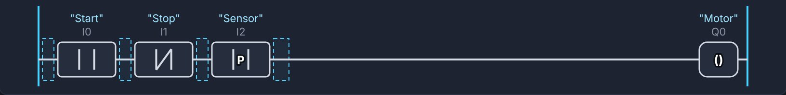
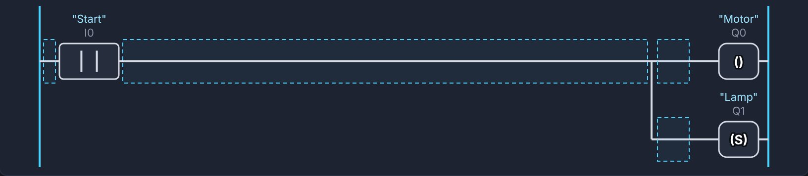
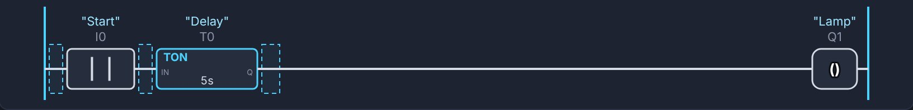
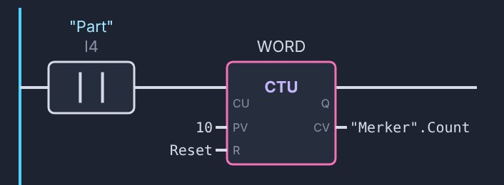
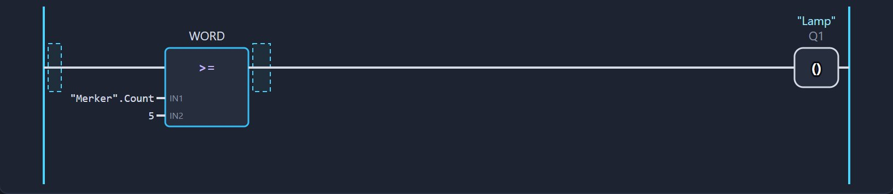
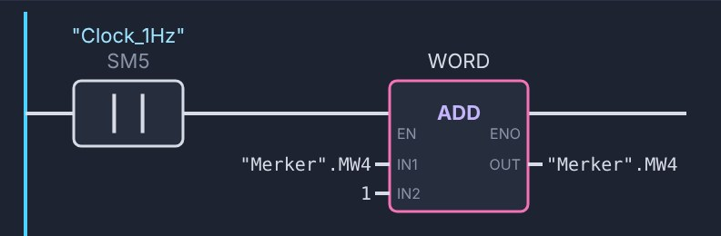
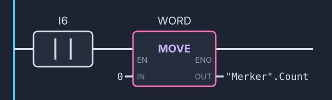
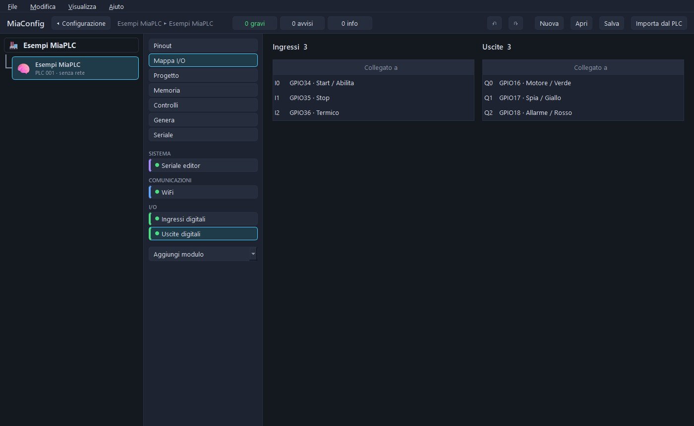
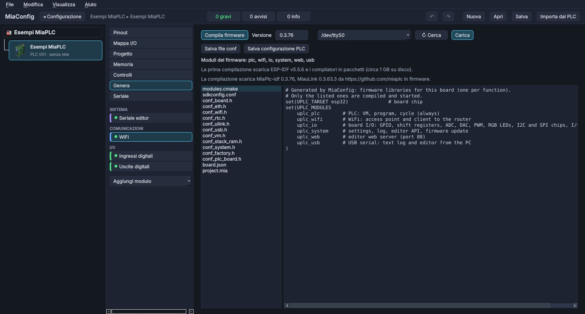
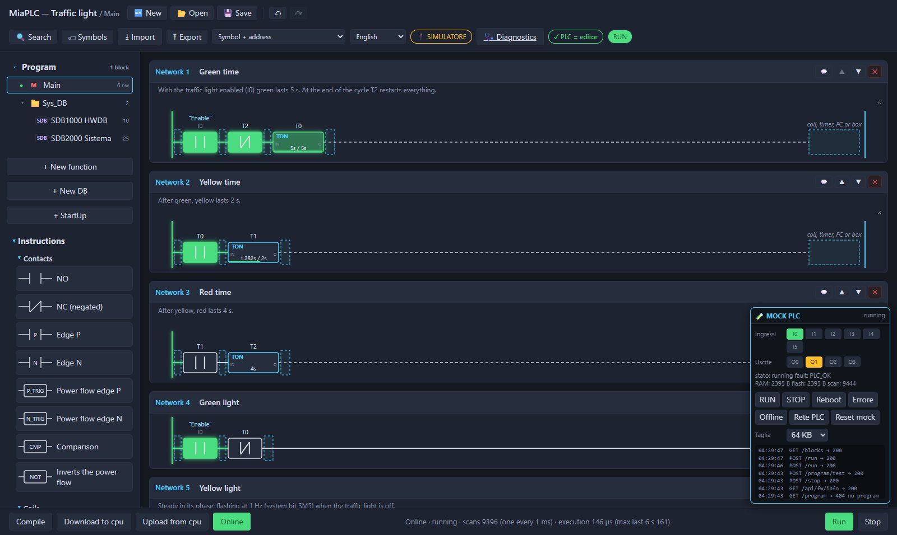

MiaPLC Wiki
What MiaPLC is
MiaPLC (Micro Integrated Automation Programmable Logic Controller) is a PLC built on ESP32 microcontrollers. Three parts work together:
- the board: an ESP32 with inputs, outputs and a network (Ethernet, WiFi or both, depending on the board);
- the firmware: runs the program in a bytecode virtual machine, cycle after cycle, and handles network, I/O, clock, security and diagnostics;
- the web editor: it lives inside the PLC. You open it in the browser at the board's address and program in ladder. You can also open it on the PC and connect with a USB cable.
You work the same way as with industrial PLCs: write the program, Compile, Download to cpu, Run, then Online to watch it work. Around it are the other programs: MiaConfig to prepare custom boards and firmware, the µLink remote I/O modules and the HMI panel.
First steps
There are two paths. With a board that already has the MiaPLC firmware you start right away: power on, open the editor and program. MiaConfig is only needed on the advanced path: custom electronic boards and advanced projects, when you build your own custom firmware.
Ready board, firmware already loaded
- Power on the board. The firmware is already inside: inputs, outputs and network are ready.
- Connect. With the Ethernet cable, a factory board has the fixed address
192.168.0.10: the PC must be on the 192.168.0.x network. Boards without Ethernet open their own WiFi networkmiaplc-XXXXinstead (the last digits come from the chip) with the address10.10.10.1. - Open the editor. In the browser, open the board's address, for example
http://192.168.0.10. The editor lives inside the PLC: nothing to install. - Log in. The first time, you set the administrator password using the board's recovery password (valid for the first 10 minutes after power-on). After that you log in with your password.
- Write your first network, then Compile → Download to cpu → Run → Online.
You don't need MiaConfig. Firmware updates are done from the editor, with the .miaplc.fw package.
You configure the board with MiaConfig
For custom electronic boards and advanced projects: you choose chip, pins, modules and communications, and you compile a firmware tailored to your needs.
- Choose the board. One of the reference boards or your own (see Boards and MiaConfig).
- Prepare the firmware with MiaConfig. You describe the board (inputs, outputs, Ethernet, clock, µLink, panel), then Genera → Compila firmware (Generate → Compile firmware). The first time it downloads the build tools (you need internet and about 1 GB of disk); after that it just compiles.
- Load the firmware. The first time via USB, later from the editor with the
.miaplc.fwpackage. MiaConfig also sets the board's passwords. - Program as on the basic path: editor in the browser, Compile, Download, Run, Online.
Manual: hardware with MiaConfig, step by step · Full MiaConfig guide
No board yet? Start with the simulator: it is the same editor, with a simulated PLC in the browser.
The simulator
The simulator is the real editor with a simulated PLC instead of the board. The simulated virtual machine follows the same rules as the firmware: a program that works in the simulator also works on the board.
- In the MOCK PLC box, click the inputs
I0…I5to switch them on and off; the outputsQ0…Q3light up when they are active. - RUN / STOP / Reboot work like the editor commands and the board restart; Error and Offline simulate a fault and a lost connection.
- The simulator runs one scan every 10 ms and at most 10000 instructions per scan. On the board the cycle can go down to 1 ms and the limit is time (the cycle watchdog), not the number of instructions. Real timings are measured on the PLC.
- Program and state stay saved in the browser; Reset mock clears everything.
The scan cycle
Like every PLC, MiaPLC always repeats the same loop:
- reads the inputs of the board and of the µLink modules;
- runs the program from start to end (Main and the FCs it calls);
- writes the outputs and sends them to the modules.
So the program does not “wait”: every network is evaluated again on every loop. Timers count the time between one loop and the next; edges remember the state of the previous loop.
- The set cycle time (1 ms) is a minimum: with a long program the loop takes longer.
- The cycle watchdog (150 ms by default, from 10 to 1000 ms in MiaConfig) is the maximum time of one scan: beyond it, the PLC goes to STOP with an error and the outputs off.
- On dual-core chips the PLC has a CPU all to itself; on single-core chips (C3), after each loop the system (network, editor, USB) gets at most 2 ms.
- Writes from outside (Online, panel, data exposure, Modbus) come in between two scans, never in the middle of one.
- Scan time, cycle time and CPU load can be read in Diagnostics and in the System DB.
Blocks: Main, StartUp, FC, DB
| Block | What it is for |
|---|---|
| Main | The main program, run on every scan. |
| StartUp | One scan instead of Main each time the PLC goes to RUN: power-on in RUN, from STOP to RUN, after an error and after a full Download. It reads the inputs and writes the outputs: use it for initial values and resets. |
| FC (function) | A reusable piece of program with its own interface (IN, OUT, IN_OUT, TEMP). Numbers from 1 to 1023; called from Main, from StartUp or from other FCs, up to 8 levels. |
| FC with memory (FB) | An FC with at least one STATIC variable: each call has its own instance DB (DB 3000…3999, created by the editor) and remembers values from one loop to the next. |
| DB (data block) | Variables with name and type, including structures and arrays. Numbers from 1 to 65535. A DB can be retentive: see Retentive memory. |
| System DBs | Written by the PLC, read-only: DB 1000 (board hardware and I/O tables), DB 1100 (Modbus), DB 2000 «Sistema» (times, RAM, network…), DB 1001 and following for the µLink modules. |
Each block is split into networks, each with a title and a comment. Blocks can be grouped in folders. A program has at most 256 blocks; the local data of an FC can be up to 1024 bytes.
Retentive memory
Only the DBs marked retentive survive power-off. Merkers M, timers T and outputs start from zero at every power-on.
Retentive DBs are saved to flash:
- at every STOP from the editor;
- at every clean restart (from the editor or from MiaConfig);
- when power fails, if the board has the Mancanza tensione (Power failure) input (you add it in MiaConfig, with a capacitor that keeps the chip on long enough to save).
Without the power-failure input, a sudden power-off in RUN loses the changes made after the last save: for a real machine you should always include it.
On Download, fields with the same name and the same type keep their value. Space for retentive DBs: 8 KB on ESP32, C3 and S3, 64 KB on the P4.
Areas and addresses
| Area | Addresses | What it holds |
|---|---|---|
I | I0 … I1023 | Digital inputs (read-only). The board's inputs come first, the µLink modules' inputs from I64 up (64 bits per module). |
Q | Q0 … Q1023 | Digital outputs, with the same layout. |
M | M0 … M1023 | Merkers: internal memory bits, cleared at every power-on. |
T | T0 … T255 | Timers: the contact T5 is the output of timer 5. |
SM | SM0 … SM5 | System bits (read-only, see below). |
DB | e.g. "Impianto".livello | Data block variables, by name. You can also use one bit of an integer field: "Dati".stato.3. |
Memory bytes, words and double words (MB, MW, MD…) are no longer PLC areas: if a project uses them, the editor moves them automatically into a retentive DB «Merker»
(MW3 becomes "Merker".MW3, MW3.5 its bit 5).
System bits
| Bit | Meaning |
|---|---|
| SM0 | 1 in StartUp and in the first Main after each change to RUN |
| SM1 | always 1 |
| SM2 | always 0 |
| SM3 | 10 Hz clock (100 ms period) |
| SM4 | 2 Hz clock (500 ms) |
| SM5 | 1 Hz clock (1 s) |
The clocks change from one scan to the next. Times, RAM and network status are in the System DB.
You can give each address a symbol (name and comment) in the symbol table: in ladder you will see "Start" above I0.
Data types
| Type | Range |
|---|---|
| BOOL | 0 / 1 |
| BYTE · USINT | 0 … 255 |
| SINT | −128 … 127 |
| WORD · UINT | 0 … 65535 |
| INT | −32768 … 32767 |
| DINT | 32-bit signed |
| UDINT | 32-bit unsigned |
| REAL | 32-bit floating point |
| TIME | time in ms (about ±24 days), written as T#5s, T#1m30s, T#250ms, T#2h, T#1d |
| TIMER | a timer with its state in a variable (fields PT, ET, IN, Q): it does not use T0…T255 and, in a retentive DB, it survives power-off |
- Structures: your own types with simple fields and timers, for use in DBs and interfaces (e.g.
"Dati".motore.velocita). - Arrays
[min..max]: up to 4096 elements, not of BOOL or structures. An indexed element is used in FCs in ST and C; an index out of bounds sends the PLC to STOP with an error. - There are no strings and no 64-bit types.
Ladder instructions
| Group | Instructions |
|---|---|
| Contacts | NO, NC, P / N edge of an operand, power-flow edge P_TRIG / N_TRIG, NOT, compare (== <> < > <= >=) |
| Coils | coil, negated coil, SET, RESET, end of FC (RET) |
| Timers | TON on-delay, TOF off-delay, TP pulse: on T0…T255 or on a TIMER variable |
| Counters | CTU up, CTD down, CTUD up and down (the CV value is an integer variable in a DB) |
| Numbers | MOVE, ADD, SUB, MUL, DIV, MOD, NEG, ABS, MIN, MAX, LIMIT, CONV, SQRT, SQR (REAL only), SCALE (e.g. 0…27648 → 0…100 %) |
| Words | AND, OR, XOR, INV, SHL, SHR, ROL, ROR, SWAP (integers only) |
| Functions | call of an FC, with its parameters; Modbus system functions |
Numeric boxes have EN / ENO. An overflow does not stop the PLC: the result wraps around and ENO goes to 0. A division by zero leaves the result unchanged, sets ENO to 0 and turns on SF with an entry in Diagnostics. LIMIT with a minimum greater than the maximum and SCALE with the input out of range also set ENO to 0.
How they look in ladder







The images come from the editor. The details of each instruction are in the editor guide. Step by step: build the example projects.
FCs in ST and C
A function can also be written as text: ST (Structured Text) or C. Main and StartUp stay in ladder. Useful for calculations, loops and recipes, while contact logic stays in ladder.
| ST | C | |
|---|---|---|
| Conditions | IF … THEN … ELSIF … ELSE … END_IF, CASE … OF 1: …; 2, 5..7: … ELSE … END_CASE | if / else, switch / case / default (each case ends with break;) |
| Loops | FOR … TO … BY … DO … END_FOR, WHILE … DO … END_WHILE, REPEAT … UNTIL … END_REPEAT, EXIT, CONTINUE | for, while, do … while, break, continue, ++ -- += -= |
| Operators | AND OR XOR NOT, = <>, MOD | && || ^ !, == !=, %, & | bitwise |
| Operands | #name (interface; in C without #), "DB".field, I5, Q0, M100, T5, SM0, name[i], symbols "Name"; constants 16#FF, 2#1010, 1.5, TRUE, T#5s; comments // and (* *) | |
IF #avvio AND NOT #stop THEN
#output := TRUE;
ELSIF #stop THEN
#output := FALSE;
END_IF;
Autocomplete suggests variables, DB fields and symbols. From text you cannot call other FCs, timers or counters: do those in ladder. An endless loop does not lock up the board: the cycle watchdog sends the PLC to STOP and Diagnostics shows the point in the program.
RUN, STOP and errors
- PLC states: RUN, STOP, error and «no program». In STOP and in error the outputs are off.
- RUN and STOP come from the editor (network or USB): the board has no selector switch. At power-on, the MiaConfig setting «Al riavvio» (On restart) applies: «ultimo stato» (last state) or «sempre RUN» (always RUN).
- You leave the error state with RUN; if the cause is still there, the PLC goes back to error.
- A Download with the PLC in RUN sends only the changed blocks and swaps them between two scans; if there is not enough memory, you need STOP and a full Download.
What sends the PLC to STOP
- A scan longer than the cycle watchdog, inputs not read again, an array index out of range, an invalid program.
- A lost µLink module, if the module setting says so.
- I/O tables made for a different board (RUN is refused).
- A serious firmware error: the board restarts and the PLC starts again in STOP with a warning.
SF: system fault
SF is the “red LED” that the editor shows: there is a problem, but the PLC keeps working. It stays on as long as the cause is there; the details are in Diagnostics (startup checks and log).
| Example causes |
|---|
| Invalid settings, unreadable retentive data, low RAM, missing I2C or SPI device, network used by the program still missing after the allowed time, division by zero in the program, access point with the factory password, factory network restored, previous settings or firmware restored, missing I/O point, µLink module not reachable |
Protection against firmware errors
The settings in use become “good” after one hour (two minutes with an editor connected). After 3 serious errors in a row right after power-on, the last good settings come back; after 3 more, the board starts with the previous firmware. A firmware module that does not start (e.g. a missing I2C chip) does not lock up the board: it becomes a warning or an SF.
Online and diagnostics
- Online: closed contacts and energized coils turn green, timers show elapsed / preset time, boxes show their values. A click on a DB field or a merker changes its value (it is not a force: the program can write it again).
- Diagnostics, with three levels Basic, Advanced and Debug: PLC state, versions, event log, scan times, CPU load, RAM analysis, startup checks, µLink I/O modules, network, access (sessions, passwords, access log), firmware update, backup and restore.
- The log records startups (with the reset reason), RUN and STOP with who requested them, errors, network, modules lost and back, power failures. Entries get a date as soon as the time is known.

System DB «Sistema» (DB 2000)
Written by the PLC before every scan, read-only. You use it in the program like the other DBs, for example "Sistema".scan_us.
| Field | Type | Meaning |
|---|---|---|
| tick_us, tick_ms, uptime_s | UDINT | µs (wraps around after about 71 minutes), ms and seconds since power-on |
| unix | UDINT | UTC time in seconds since 1970 (0 = unknown) |
| scan_us, scan_max_us | UDINT | execution time of the previous scan and maximum of the last 6 s (µs) |
| cycle_us, scan_count | UDINT | cycle from one output write to the next (µs), scans since startup |
| heap_free, heap_min | UDINT | free RAM and minimum since power-on (bytes) |
| cpu0, cpu1 | REAL | load of CPU 0 (network and USB) and CPU 1 (PLC), % |
| rssi | INT | WiFi signal to the router (dBm, 0 = not connected) |
| editors, load | BYTE | editors connected in the last 10 s, program time in the last second (%) |
| ulink_ok, ulink_n | BYTE | µLink modules in RUN (bit n = module n) and configured modules |
| eth, wifi, ap, hmi, sf, first_scan | BOOL | Ethernet connected, WiFi to the router, access point open, panel connected, SF on, first loop |
Memory and limits
| ESP32, S3, C3 | ESP32-P4 | |
|---|---|---|
| Program code | up to 100 KB | up to 8 MB |
| Work memory (RAM for the code) | up to 40000 bytes, depending on free RAM (about 11 KB on the C3) | from 50 KB up to 8 MB in PSRAM |
| With WiFi on | work memory drops to 12 KB: WiFi uses a lot of RAM | |
| All DBs together | 8 KB | 2 MB (one DB at most 32 KB) |
| Retentive DBs | 8 KB | 64 KB |
| Blocks, call levels, I/Q/M, timers | 256 blocks, 8 levels, 1024 bits per area, 256 T timers | |
MiaConfig shows the memory of the chosen configuration and can measure it on a real board. If the program does not fit, the Download is refused with a clear message.
Boards and MiaConfig
MiaConfig is for custom boards and advanced projects. With a board that already has the MiaPLC firmware you don't need it: see the basic path in First steps.
MiaConfig is the configurator: you describe the board (inputs, outputs, Ethernet, WiFi, clock, I2C/SPI devices) and it chooses the firmware modules and compiles the firmware. It runs on Windows, Linux and macOS and installs nothing on the system: everything stays in its folder. The full guide is in Program guide → MiaConfig.
| Chip | Reference boards |
|---|---|
| ESP32 | Olimex ESP32-EVB, Ethernet LAN8720 (with or without DS3231 clock) |
| ESP32-C3 | ESP32-C3 Super Mini: WiFi only, or Ethernet W5100 (also with DS3231 and µLink) or W5500 |
| ESP32-S3 | ESP32-S3-DevKitC-1 (WiFi) |
| ESP32-P4 | Waveshare ESP32-P4-ETH (Ethernet IP101) and HMI panel |
| ESP32-C6 | Can be configured, not yet tested on a board |
Ethernet chips: W5100 and W5500 (SPI, on every chip), LAN8720 and IP101 (RMII, on ESP32 and P4). The W5100 carries both network and µLink.

Manual: configure the hardware for the examples with MiaConfig, from project to wiring.
Network
| Interface | Factory values |
|---|---|
| Ethernet | fixed IP 192.168.0.10, mask 255.255.255.0, gateway and DNS 192.168.0.1 (or DHCP, if you set it) |
| PLC WiFi access point | network miaplc-XXXX, IP 10.10.10.1 with DHCP for devices that connect, channel 6, up to 8 devices. It closes by itself when the PLC is connected to the router. |
| WiFi to the router | DHCP or fixed IP; remembers up to 5 networks; if the router does not answer it reconnects by itself. |
- From the factory, WiFi is on only on boards without Ethernet. You change it from the editor (Diagnostics → Network) or in MiaConfig; network settings take effect after a restart.
- The PLC name (factory name
uplc, up to 24 characters) is also its DHCP name. - Back to the factory network: power on the board 3 times in a row, switching it off each time within 10 seconds.
- The networks the editor can be opened from are chosen in MiaConfig: all, Ethernet only or WiFi only.
- MiaConfig finds the PLCs on the network (UDP 5052) and can change their address even if they are on a different network from the PC.
- With both WiFi and Ethernet off, the editor works only via USB cable.
Passwords and security
- To open the PLC editor and the panel editor from the network you need the administrator password: at least 10 characters with an uppercase letter, a lowercase letter, a number and a special character.
- Login uses a challenge (the password never travels over the network) and every request is signed. The PLC stores only a fingerprint of the password, never the password itself.
- A new board opens with the recovery password created by MiaConfig, valid for the first 10 minutes after power-on and only to choose the administrator password. You also use it if you forget the password.
- Sessions expire after 30 minutes without requests and in any case after 12 hours; at most 4 at a time (2 on the C3). After 5 wrong passwords the wait doubles, up to 5 minutes.
- The USB cable is physical access: it does not ask for a password.
- µLink modules talk to the PLC with signed messages (CMAC-AES), with one key per module.
- Modbus TCP has no password, as on all PLCs: keep PLCs, modules and panels on a protected network, never directly on the internet.
Update, backup, restore
- Update the firmware: from the editor with the
.miaplc.fwpackage, with the PLC in STOP. The new firmware goes into the second half of the flash and becomes the boot firmware only if it is intact; settings, symbols, log and program are kept. If a package changes the partitions, you need to load it via USB. - Backup from Diagnostics: a
.miaplc.bkpfile (.miaulink.bkpfor a µLink module) with firmware, editor files, settings, symbols, program and DB values. WiFi passwords are not included: on a new board you must enter the router password again. - Restore: on the same PLC from the editor, on a new board with the USB recovery.
- First install and recovery: via USB, with the
-completo.binfile from MiaConfig or with the recovery in the editor opened on the PC.
Clock
The PLC gets the time, in this order, from a DS3231 clock with battery (if the board has one), from the internet (NTP) as soon as it has a network, or from the PC when you open the editor.
The time is kept in UTC and the editor shows it in the PC's time zone. In the program you read it in "Sistema".unix (0 = time unknown).
µLink: remote I/O
µLink connects input and output modules to the PLC over the Ethernet cable. It works directly on Ethernet frames, without IP addresses: it works through switches but not through routers, and not over WiFi.
- The PLC exchanges outputs and inputs with each module every 15 ms, without ever stopping the scan to wait for them.
- Up to 8 modules (64 on the P4). Each module uses 64 inputs and 64 outputs from I64 / Q64 up, plus analog REAL values (from 0.0 to 1.0 of the range; the program does the scaling), and has its own DB in the program.
- Pairing: from Diagnostics («Search devices», pair, save) or from MiaConfig with pre-pairing: the PLC finds and pairs its modules by itself, even in RUN.
- If a module stops answering (300 ms): its outputs turn off, SF turns on in the PLC and the log records it. Then, depending on the setting: it restarts by itself when it comes back (factory setting), waits for a «Re-arm», keeps the PLC in STOP while it is missing, or sends it to STOP at once.
- A module can be an ESP32 with the MiaPLC firmware in the «Modulo I/O» (I/O module) role (it has its own web page and its own update), or an Arduino Uno with a W5100 or W5500 Ethernet shield and the MiauLink library (up to 14 digital and 6 analog points). The Arduino sketch has not yet been tested on a board.
Modbus TCP and data exposure
- Modbus TCP master and slave (port 502, functions 1, 2, 3, 4, 5, 6, 15, 16). Devices and registers are set in the editor; the data is in DB 1100 «Modbus», with result, ready and request for each read and write. The master works only in RUN; the slave answers in STOP too. Modbus RTU over serial is not available yet.
- Data exposure: another program reads and writes PLC values in JSON (
/api/data/exposure), up to 256 values per request; only chosen merkers and DB fields can be written. From the network it needs a login with signed requests, as for the editor.
HMI panel
MiaHmi is the firmware for a 10.1" touch panel on ESP32-P4, with Ethernet, WiFi (ESP32-C6 module), microSD and USB port. It shows and controls PLC values and handles alarms and charts. The PLC sends it the items chosen in the editor's HMI data module (up to 256, updated every 250–1000 ms). The firmware is prepared with MiaConfig; the pages are drawn in the panel editor, explained in Program guide → MiaHMI editor.

Program guide
Everything the three programs do, item by item. Open the section you need, or search for a word: only the parts that contain it will open.
MiaConfig The board configurator · custom hardware and firmware
MiaConfig is in Italian only: the labels below are quoted as they appear on screen, with the English meaning in brackets.
MiaConfig designs the hardware of a board (chip, modules, pins), checks that everything is consistent, builds the ESP-IDF firmware on your PC and uploads it, via USB or over the network. It also handles a whole installation: PLC, µLink I/O modules and panels, all uploaded together. It is meant for custom boards and advanced projects: with a board that already has the MiaPLC firmware you don't need it. The PLC program is not written here but in the MiaPLC editor.
Installing and starting
Systems and requirements
- Windows, Linux and macOS. Ready-made packages:
MiaConfig-<versione>-windows.zip,-linux.tar.gz,-macos.zip. - Linux: you need
python3withvenvand the desktop Qt libraries (on Debian and Ubuntu alsolibxcb-cursor0). - macOS: you need
python3(Xcode Command Line Tools). The program is not signed: the first time, right-click → Open. - From source: Python 3.10 or newer.
- It installs nothing into the system: everything stays in its own folder (Python, ESP-IDF, compilers, projects, outputs).
First start
- Package: unpack and start MiaConfig (on macOS
MiaConfig.app). - From source on Windows: double-click
avvia.bat. The first time it prepares the.venvfolder with Python and PySide6 (internet required): «Preparo l'ambiente Python in .venv (solo la prima volta)...» (Preparing the Python environment in .venv (first time only)...). If it fails: you need Python 3.10 or newer; delete.venvand try again. - The window remembers its size, position, the open configuration, the device and even the project not yet saved.
What the first build downloads
- ESP-IDF v5.5.6, the chip compilers and (on Windows) a portable Python, in the
pacchettifolder: about 1 GB on disk. Internet is needed only this once. - The compilers for each chip are downloaded the first time you build for that chip.
- The firmware sources (MiaPlc-idf, MiauLink, MiaHmi-idf, MiaComponents) in the
firmwarefolder. - An interrupted download resumes the next time; each download is tried 3 times. Behind a company proxy the
SSL_CERT_FILEvariable is honoured. - To start over from scratch: delete
pacchetti,firmware,progettior.venv.
Command line
| Command | What it does |
|---|---|
miaconfig controlla scheda.mia | Checks only. Exits with 0 if there are no errors, with 1 if there are. |
miaconfig genera scheda.mia cartella | Writes the firmware configuration files. |
miaconfig compila scheda.mia | Configuration, ESP-IDF, build and packages in uscita/<scheda>/. |
miaconfig --version | The version. |
On Windows from source: avvia.bat compila esempi\plc-c3.mia. Messages are prefixed with ERRORE: (error), ATTENZIONE: (warning), nota: (info).
The window
Menus
| Menu | Items |
|---|---|
| File | «Nuova configurazione…» (New configuration…, Ctrl+N), «Apri configurazione…» (Open configuration…, Ctrl+O), «Chiudi configurazione» (Close configuration), «Importa dal PLC…» (Import from PLC…), «Salva» (Save, Ctrl+S), «Salva con nome…» (Save as…, Ctrl+Shift+S), «Esci» (Exit, Ctrl+Q) |
| Modifica (Edit) | «Annulla» (Undo, Ctrl+Z), «Ripeti» (Redo, Ctrl+Y or Ctrl+Shift+Z): up to 200 steps, for each open project |
| Visualizza (View) | «Rete (ricerca dispositivi)» (Network (device search), Ctrl+R); the views «Pinout» (Ctrl+1), «Mappa I/O» (I/O map, Ctrl+2), «Progetto» (Project, Ctrl+3), «Memoria» (Memory, Ctrl+4), «Controlli» (Checks, Ctrl+5), «Genera» (Generate, Ctrl+6), «Seriale» (Serial, Ctrl+7) |
| Aiuto (Help) | «Informazioni su MiaConfig» (About MiaConfig) |
Top bar
- «◂ Configurazione» (Configuration): goes back to the configuration page (also by clicking the name at the top of the tree).
- The path: configuration ▸ open device.
- The check counters: «N gravi» (N errors; red if more than 0: the firmware will not build), «N avvisi» (N warnings; yellow: to be checked), «N info» (to be aware of). A click opens the Checks view.
- «↶» undo, «↷» redo, then «Nuova» (New), «Apri» (Open), «Salva» (Save), «Importa dal PLC» (Import from PLC).
- In the window title the dot «●» means unsaved changes.
The columns
- Configuration tree: the devices of the installation, drawn like a ladder (power rail on the left, each PLC on a network, its modules and panels below).
- Views and modules: the view buttons, then the project modules split by group (Sistema (System), Comunicazioni (Communications), Bus, Dispositivi (Devices), I/O, HMI, Dispositivi I/O (I/O devices)). The dot of each module is red with an error, yellow with a warning, green if it is fine. At the bottom, the «Aggiungi modulo» (Add module) drop-down.
- Central view: the selected view.
- Settings (Pinout only): settings and pins of the selected module. It widens by dragging its left edge.
Closing
With unsaved changes MiaConfig asks for confirmation (the project is still there the next time you open it). With jobs in progress (build, upload, Misura (Measure), serial monitor) it warns that they will be stopped. If it is writing the flash of a board, stopping may leave it half-written: fix it by uploading again via USB.
The configuration: an installation with several boards
What it is and how it looks on disk
A configuration groups the boards of one job: PLC, µLink I/O modules, HMI panels. Each device has its own folder:
stazione_pompaggio/
stazione_pompaggio.mia the configuration
access.miapwd board credentials (encrypted)
stazione_pompaggio_plc_001/
stazione_pompaggio_plc_001.mia PLC hardware
stazione_pompaggio_plc_001.miaplc PLC program
stazione_pompaggio_io_002/ … I/O module
stazione_pompaggio_hmi_003/ … .miahmi panel
The device files are normal MiaConfig projects: they can also be opened on their own.
New configuration and opening
- From the start page: type the name (e.g. «Stazione di pompaggio») and press «Nuova configurazione…» (New configuration…), then choose where to create the folder.
- «Apri configurazione…» (Open configuration…) opens a configuration
.mia. If you open the.miaof a single board, MiaConfig creates<nome>-configurazione.mianext to it with that board and opens it. - Old
.hwplcfiles and settings saved from a PLC (.json) can also be opened. - When you open a configuration without an administrator password, MiaConfig asks for one (see Board access).
The configuration page
- «Descrizione della configurazione» (Configuration description): free text.
- «Dispositivi» (Devices) table: «Nome» (Name), «Tipo» (Type: PLC 001, I/O 002, HMI 003), «Indirizzo» (Address: fixed IP or DHCP), «PLC» (which PLC a module or panel belongs to, or «nessun PLC (standalone)» (no PLC (standalone))), «Nome uLink» (uLink name), «Cartella» (Folder), «Commento» (Comment). Name, comment and uLink name are typed directly in the table; double-click opens the device.
- Buttons «Nuovo dispositivo…» (New device…), «Apri hardware» (Open hardware), «Duplica» (Duplicate: copies hardware and program or project, with the next number and address), «Togli» (Remove: removes it from the configuration but does not delete the folder), «▲», «▼».
- Below, the checks between devices; if everything is fine: «Schede coerenti: indirizzi unici, uLink, PLC dei pannelli e tabelle I/O dei programmi a posto.» (Boards consistent: unique addresses, uLink, panel PLCs and program I/O tables all fine.)
- «Prepara la base del firmware in sottofondo» (Prepare the firmware base in the background), «Verifica compilazione» (Check build), «Allinea le schede» (Align the boards), «Compila tutto» (Build all), «Carica tutto…» (Upload all…), «Accesso alle schede…» (Board access…).
The device tree
- Each box shows image, name, code and address («PLC 001 · 192.168.0.21»), and for modules the uLink name, the pre-pairing and the status of the firmware base. Red name = error, yellow = warning.
- Click: opens the device; click again: back to the configuration.
- Right-click on a device: «Apri» (Open), «Editor del pannello (offline)» (Panel editor (offline), panels), «Compila il firmware» (Build the firmware), «Rinomina…» (Rename…), «Duplica» (Duplicate), «Togli dalla configurazione…» (Remove from configuration…), «Sposta su» (Move up), «Sposta giù» (Move down), «Identifica (LED o schermo)» (Identify (LED or screen); makes the real board blink, if it is already paired), «Nuovo dispositivo…» (New device…).
- Right-click outside the devices: «Nuovo dispositivo…» (New device…), «Allinea le schede» (Align the boards), «Carica tutto…» (Upload all…), «Ricerca dispositivi» (Device search), «Pagina della configurazione» (Configuration page).
New device

- «Tipo» (Type): «PLC», «Modulo I/O» (I/O module) or «Pannello HMI» (HMI panel).
- «Nome» (Name), chip «Famiglia» (Family; the panel only ESP32-P4), «Modulo» (Module; for ESP32 the default is «ESP32-WROOM-32E / 32UE», the one on the Olimex ESP32-EVB).
- For modules and panels: the «PLC» that controls them.
- «Aggiungi» (Add): the device opens ready to use. PLCs and modules have Seriale editor (Editor serial), WiFi (if the chip has the radio) and uLink; with the Olimex ESP32-EVB also the LAN8720 Ethernet with its pins. The panel starts with IP101 Ethernet, a 10.1" JD9365 screen and GT911 touch.
- Proposed addresses: from 192.168.0.21 upwards for PLCs and modules, from 192.168.0.20 upwards for panels.
uLink name, module DBs and pre-pairing
- Each I/O module has a uLink name: lowercase letters and digits, at most 16, starting with a letter (e.g.
linea). It is its name on the network and the name of its DB in the program. - The module DBs in the program start from 1001 (1000 is the one for the board's own hardware).
- Pre-pairing is an 8-hex-digit code shared by a PLC and its devices: this way the PLC recognises its modules and panels by itself.
Align the boards
Writes into the boards what the configuration decides:
- in the I/O modules the «Modulo I/O» (I/O module) role and a network name equal to the uLink name;
- in the PLCs the «PLC» role and the number of modules;
- in the panels the IP of their PLC (empty if standalone);
- the pre-pairing in all of them;
- in the PLC's
.miaplcprogram, the I/O tables with the points of the board and of the modules, and the module DBs: the program sees them even before the hardware exists.
The button is active when there is at least one «da allineare» (to be aligned) warning. The result lists what was changed, or «Niente da allineare.» (Nothing to align.).
Chips and boards
For now MiaConfig shows only the chips and boards that can be tested on the bench.
| Family | Modules and chips | Notes |
|---|---|---|
| ESP32 | ESP32-WROOM-32E / 32UE; on-board chips D0WD-V3, D0WDRH2-V3, U4WDH, D0WDQ6-V3 | RMII Ethernet (LAN8720, IP101), DAC on GPIO 25 and 26, up to 16 PWM |
| ESP32-S3 | ESP32-S3-WROOM-1 N8R8 / N16R8; chips S3, S3FN8, S3RH2, S3R8, S3R16V, S3FH4R2 | SPI Ethernet only, native USB |
| ESP32-C3 | ESP32-C3 Super Mini; chips C3, C3FH4, C3FN4, C3FH8X, C3FH4X, C3FH4AZ | Single core, SPI Ethernet (W5100, W5500) |
| ESP32-C6 | on-board chips C6, C6FH4, C6FH8 | SPI Ethernet |
| ESP32-P4 | ESP32-P4 + C6 PoE; chips P4NRW16X, P4NRW32X | No radio in the P4 (WiFi is in the C6), RMII Ethernet, large programs, the only chip for panels |
MiaConfig's examples: Olimex ESP32-EVB (also with DS3231 clock), ESP32-S3-DevKitC-1, ESP32-C3 Super Mini with W5100 or W5500, Waveshare ESP32-P4-ETH, P4 panel.
Changing the family sets the module to the first one of the new family and removes the modules that the new chip does not have.
The views
Pinout
- The chip drawn with pins on all four sides; with an «su scheda» (on-board) chip, all the package pads in their place.
- Colours: used pin = colour of the module's group; reserved pin (e.g. flash) dark with its function; red border = error, yellow = warning, white = pin of the selected module.
- Zoom with the wheel or two fingers (up to 6×), drag to move around, double-click the background to see the whole chip again.
- Click on a pin: its characteristics (reserved, input only, analog only, ADC, DAC, boot pin…), who uses it with «libera» (free), the signals still without a pin that can go there (one click assigns them) and «Riassegna…» (Reassign…) to move a signal there from another pin.
- Right-hand panel: module settings, signal table («Segnale» (Signal), «Dispositivo» (Device), «GPIO», 24-character «Commento» (Comment)). The GPIO drop-down offers only suitable pins. Mandatory signal without a pin = red.
- «Assegna pin liberi» (Assign free pins): picks free pins by itself, preferring those without warnings (avoids boot, serial and USB pins, and ADC2 for analog inputs).
- «Esempio di collegamento» (Wiring example) for «Mancanza tensione» (Power loss) and «Protezione reset USB» (USB reset protection): drawing and components.
- The module's memory line: how much flash and RAM it uses (estimate).
I/O map

- Tables «Ingressi» (Inputs), «Uscite» (Outputs), «Ingressi analogici» (Analog inputs), «Uscite PWM» (PWM outputs), «Uscite analogiche» (Analog outputs): for each point (I0, Q0, AI0, PWM0, AO0…) where it is connected, GPIO and comment, or the bit of a shift register (e.g. «Shift register ingressi 0 · 0.3» (Input shift register 0 · 0.3)). Point without a pin = red row.
- With uLink in the PLC role: table of remote modules, 64 digital inputs, 64 digital outputs and 8 REALs per module.
- Cells can be copied (Ctrl+C or right-click → «Copia» (Copy)), also to paste them into a spreadsheet.
Project: board settings
«Impostazioni» (Settings): «Base» (Basic) or «Avanzate» (Advanced). In Basic the advanced settings are visible but cannot be changed; going back to Basic resets them to their defaults.
In Advanced the file is saved as <nome>-<CRC>.mia and never overwrites a Basic project.
| Field | What it decides |
|---|---|
| Nome (Name), Identificativo (Identifier), Famiglia (Family), Modulo (Module), Chip, Flash | The board. The identifier is turned into lowercase with hyphens. |
| Misura (Measurement) | «misurato il <data>» (measured on <date>) or «non misurato» (not measured) (see Memory). |
| Nome di rete (Network name) | Default uplc; 1–24 characters, lowercase, digits and -. |
| Editor dalla rete (Editor from network) | «da tutte le reti» (from all networks), «solo Ethernet» (Ethernet only), «solo WiFi» (WiFi only). |
| Rete usata dal programma (Network used by the program) | «nessuna: il PLC non la aspetta» (none: the PLC does not wait for it), «Ethernet», «WiFi verso il router» (WiFi to the router), «Ethernet o WiFi» (Ethernet or WiFi); with a network also «Tempo concesso all'avvio s» (Time allowed at startup, s; 1–600, default 30): the PLC waits for it at startup and writes to the log if it is missing. |
| Avanzate (Advanced) | |
| Al riavvio (On restart) | «ultimo stato» (last state) or «sempre RUN» (always RUN). |
| Controllo del ciclo ms (Cycle watchdog, ms) | Default 150, from 10 to 1000. |
| Tempo massimo al sistema µs (Maximum system time, µs) | Time for web server, USB and network after each PLC cycle: 0 on dual-core chips, 2000 µs on single-core ones. |
| Seriale USB (USB serial) | «solo editor» (editor only) or «diagnostica avanzata» (advanced diagnostics). |
| Interprete (Interpreter) | «VM standard» (standard VM), «VM accu» (accumulator VM); on the P4 in developer mode also «VM codice macchina» (machine-code VM). |
| In STOP | «programma nella RAM» (program in RAM) or «libera la RAM (il programma resta in flash)» (free the RAM (the program stays in flash)). |
| RAM per task, RAM minima: controllo ogni (RAM per task, minimum RAM: check every) | Memory diagnostic tools. |
| Modalità sviluppatore (Developer mode) | Unlocks non-production features (Pannello HMI (HMI panel) module, WiFi for everything, up to 255 uLink modules on the P4, machine-code VM) and turns crash-risk errors into warnings. |
Memory and Measure
- Without a measurement: estimate per chip and module of «Flash (partizione del programma)» (Flash (program partition)), «RAM statica» (Static RAM), «RAM libera dopo l'avvio» (Free RAM after startup), «Memoria di lavoro PLC» (PLC work memory) and of the tasks (CPU, priority, stack). Red rows: flash above 95 %, free RAM below 48 KB, work memory below 16 KB.
- «Misura» (Measure) tests the configuration on a real board connected via USB: it erases the chip, uploads a measurement firmware, measures it idle and under load (test program at 90 % of memory in RUN, Online for 30 s, two Downloads, editor via USB and via the ticked networks), then puts back the configured firmware without a program. It takes about 6 minutes.
- The result: verdict («sicura» (safe), «poco margine» (little margin), «rischio di crash: la compilazione è bloccata» (crash risk: the build is blocked)), RAM, recommended maximum system time, tests passed and with errors, stack and load of each task, the PLC cycle drawn phase by phase.
- Measurements apply to all configurations with the same combination (module, Ethernet, WiFi, clock, uLink, Modbus…). «Importa misura» (Import measurement) and «Visualizza misura» (View measurement) for those from another PC.
Checks
All the project checks, coloured by level. A click on a row selects the module and opens the Pinout. With no problems: «Nessun problema» (No problems). See Checks.
Generate

- «Compila firmware» (Build firmware; disabled if there are errors), package «Versione» (Version), the port (USB or PLCs found on the network), «↻ Cerca» (Search), «Carica» (Upload).
- «Salva file conf» (Save conf files; zip of the firmware configuration) and «Salva configurazione PLC» (Save PLC configuration;
<id>-impostazioni.json). - «Moduli del firmware» (Firmware modules): which parts go into the firmware (plc, eth, wifi, rtc, io, ulink, modbus, system, web, hmi, usb), chosen from the hardware.
- The build log (red errors, yellow warnings, green success), then the output files with «Apri cartella» (Open folder) and, at the bottom, the generated files and their content.
- Each device has its own job: you can build a panel while a module is uploading, but never two jobs on the same USB port.
Serial
- The board log from the USB port at 115200 baud, without restarting it. «▶ Apri» (Open) / «■ Chiudi» (Close), «Pulisci» (Clear), «Salva log» (Save log; to
uscita/<id>/seriale-<data>.log). - Error lines in red, warnings in yellow.
- A board crash (Guru Meditation) is decoded automatically with function, file and line, using the firmware from the project's last build.
- «Carica» (Upload) on the same port closes the monitor.
Device search (network)
- Visualizza (View) → «Rete (ricerca dispositivi)» (Network (device search), Ctrl+R): the MiaPLC boards that respond (UDP 5052, every 5 seconds), even on another network of the PC, because they are reached by MAC.
- Columns «Tipo» (Type), «Nome» (Name), «IP», «MAC», «Firmware», «Stato» (Status: RUN, STOP, connected to the PLC…), «Vista da» (Seen from).
- For each board: «Identifica» (Identify; LED for 5 s, on the panel the brightness), «Ping» (tells whether the board is there and whether the firmware responds), «Rete» (Network; changes name, IP, mask and gateway via MAC, even if the board is on another network), «Web» (opens its page; with a protected board MiaConfig logs in with the project key).
- Flags boards that do not respond, respond slowly (over 500 ms) or have file space above 80 %.
The modules («Aggiungi modulo» (Add module))
The drop-down at the bottom of the list adds modules. The «⚠» sign means «non ancora segnato come provato su una scheda» (not yet marked as tested on a board) or «non ancora nel firmware» (not yet in the firmware). An item is disabled if the chip lacks the peripheral, if you already have the maximum, or if developer mode is needed. Tested on a board: Ethernet (W5100, LAN8720), DS3231 clock, digital inputs and outputs, JD9365 display, GT911 touch.
System
| Module | What it is for, settings |
|---|---|
| Seriale editor (Editor serial) | Fixed. The editor's serial port; on chips with native USB, «Collegamento» (Connection) UART0 or native USB. |
| Mancanza tensione (Power loss) | An input that signals when the power supply fails, to save the retentive memory. «Attiva» (Active) low or high. With a wiring example (divider and 2200 µF capacitor, or PC817 optocoupler). |
| Protezione reset USB (USB reset protection) | An output that prevents USB from resetting the board while it is in RUN. «Livello che isola» (Isolating level) 0 or 1, with a wiring example. |
| HMI core | Panels only, fixed: screen (JD9365 10.1", EK79007 7", ILI9881C, RGB, SPI…) and touch (GT911, FT5x06, XPT2046), or «Senza schermo: solo via web server» (No screen: web server only). |
Communications: WiFi

| Section | Fields and default values |
|---|---|
| Impostazioni di default (Default settings) | «WiFi»: «acceso se non c'è Ethernet» (on if there is no Ethernet; default), «acceso» (on), «spento» (off). «Uso del WiFi» (WiFi use): «editor ed esposizione dati» (editor and data exposure; default), «solo editor» (editor only), «solo esposizione dati» (data exposure only). |
| Access point del PLC (PLC access point) | «Nome rete» (Network name; empty = miaplc-XXXX from the chip), «Password» (8–63 characters), «IP» 10.10.10.1, «Canale» (Channel) 6, «Con il router» (With the router): «si chiude quando è collegato» (closes when connected) or «resta aperto» (stays open). |
| Router | «Collegamento» (Connection) «nessuno» (none) or «a una rete» (to a network): name, password (empty = open network), DHCP or fixed IP with mask, gateway, DNS. |
With protected access, the access point password becomes a random WPA2 password for each board, created by MiaConfig.
Communications: Ethernet
- «Chip»: W5100 and W5500 (SPI, on every chip), LAN8720 and IP101 (RMII, ESP32 and ESP32-P4 only). Other chips are in the catalogue but not yet in the firmware.
- SPI: «Bus» and the CS, INT (mandatory with the W5500) and RST pins. RMII: «Indirizzo PHY» (PHY address) and the EMAC pins plus MDC, MDIO, RST.
- «Priorità ricezione» (Receive priority; factory default 17 with uLink, otherwise 15).
- «Impostazioni di default» (Default settings): Ethernet on or off; fixed address (default
192.168.0.10, mask 255.255.255.0, gateway and DNS 192.168.0.1) or DHCP. - The W5100 handles TCP/IP and uLink at the same time.
Communications: uLink, Data exposure, Modbus, HMI panel
| Module | What it is for, settings |
|---|---|
| uLink (I/O remoti) (remote I/O) | I/O modules on the Ethernet cable, with their own frames without TCP/IP: Ethernet is required. «Ruolo» (Role) «PLC (comanda i moduli)» (PLC (controls the modules)) with «Moduli» (Modules) from 1 to 8 (on the P4 up to 64), or «Modulo I/O (comandato da un PLC)» (I/O module (controlled by a PLC)). Each module carries 64 inputs, 64 outputs and 8 REALs. |
| Esposizione dati (Data exposure) | PLC values read and written by another program on the network (/api/data/). |
| Modbus | Up to 4. «Tipo» (Type) RTU or TCP, «Ruolo» (Role) master or slave, «Porta» (Port; default 502), «Indirizzo slave» (Slave address) 1–247. Today the firmware has only Modbus TCP, with at most one master and one slave; the master registers are set in the editor. |
| Pannello HMI (HMI panel) | Developer mode only: the data to the panel (TCP 5050, fast trend UDP 5051), with «Anche via WiFi» (Also via WiFi). |
Buses and devices
| Module | What it is for, settings |
|---|---|
| Bus SPI (SPI bus) | «Clock MHz»: moves by itself into the range that suits all devices on the bus. SCK, MOSI, MISO pins. If no clock suits all of them: put the slow devices on another bus. |
| Bus I2C (I2C bus) | «Clock kHz» 100, 400 or 1000; SDA, SCL. Two devices with the same address give an error. |
| Orologio (Clock) | RTC on I2C: today the firmware has the DS3231. |
| Scheda SD (SD card), Memoria FRAM (FRAM memory) | In the catalogue, not yet in the firmware. |
Board I/O
| Module | Settings |
|---|---|
| Ingressi digitali (Digital inputs) / Uscite digitali (Digital outputs) | From 0 to 64 points, one per GPIO (I0, I1… / Q0, Q1…). |
| Shift register ingressi (Input shift register) | Up to 4 chains, 1–16 74HC165 ICs each (8 inputs per IC). LOAD and CLK pins (shareable), DATA, INH. |
| Shift register uscite (Output shift register) | Up to 4 chains, 1–16 74HC595 ICs. DATA, CLK and LATCH pins (shareable), OE, CLR. |
| Ingressi analogici (Analog inputs) | Chip ADC, 0–20 inputs. «Portata» (Range): 0–950 mV, 0–1250 mV, 0–1750 mV, 0–3100 mV. Automatic factory calibration. |
| Uscite PWM (PWM outputs) | Up to the chip's limit, «Frequenza Hz» (Frequency, Hz) 1–40000 (default 1000). |
| Uscite analogiche (Analog outputs) | Chip DAC (ESP32 only, GPIO 25 and 26). |
| LED RGB (WS2812) (RGB LED) | Up to 4 chains of 16 LEDs: three outputs R, G, B (0–255) per LED. |
| Canale analogico V/mA (Analog channel V/mA) | Up to 32: a 0–10 V, 0–20 mA or 4–20 mA channel on a chip ADC, an external ADC or an AD5422, with shunt and voltage/current selection bit. |
| Pin ingresso/uscita (Input/output pin) | Up to 32 pins, direction decided in the PLC tables. |
The maximum is 1024 inputs and 1024 outputs per board.
I/O devices on the buses
| Type | Chip |
|---|---|
| ADC esterno (mV) (External ADC (mV)) | ADS1115, ADS1015 (I2C, 4 channels), MCP3208 (SPI, 8), MCP3204 (SPI, 4), PCF8591 (I2C) |
| DAC esterno (External DAC) | MCP4725 (I2C, 1), GP8403 (I2C, 2), AD5422 (SPI, V/mA), MCP4922 (SPI, 2) |
| Espansore di I/O (I/O expander) | MCP23017 (I2C, 16 bit), PCF8574 (I2C, 8 bit), MCP23S17 (SPI, 16 bit), with «Direzione dei pin (i/o)» (Pin direction (i/o)) |
| Sonda RTD (RTD probe) | MAX31865 (SPI), ADS122C04 (I2C); PT100 or PT1000, 2, 3 or 4 wires; values in °C |
| Termocoppia (Thermocouple) | MCP9600 (I2C), MAX31855, MAX31856 (SPI); types K, J, T, N, E, S, R, B |
Up to 8 per type. In panels the local I/O become system values of the panel editor (sys.io.in<GPIO>, sys.io.out<GPIO>…).
Panel: Display and Touch
- Display: width and height in pixels, backlight (via the screen board's I2C, PWM on a pin, on/off, always on), colour order, mirroring. The panel firmware currently uses DSI screens.
- Touch: bus, address (GT911 automatic 0x5D or 0x14), axis swap and mirroring, read every 30 ms.
Not yet in the firmware
Seriale (Serial), Seriale software (Software serial), CAN, LoRa, Modbus RTU, Scheda SD (SD card) and Memoria FRAM (FRAM memory) can already be designed, but the build leaves them out with a warning.
Checks: errors, warnings, info
| Level | Meaning |
|---|---|
| Grave (Error) | The firmware is neither generated nor built: «Compila firmware» (Build firmware), «Carica» (Upload), configuration saves and «Carica tutto» (Upload all) skip that board. |
| Avviso (Warning) | To be checked, it builds anyway. |
| Info | To be aware of. |
Examples of project checks
- Pins: «pin mancante» (missing pin), «GPIO… riservato» (GPIO… reserved), «solo ingresso» (input only), «solo analogico» (analog only), «non ha l'ADC» (has no ADC), pin used by two signals, boot pin («il segnale collegato non deve tenerlo al livello sbagliato» (the connected signal must not hold it at the wrong level)), ADC2 that cannot be read with WiFi on.
- Modules: chip without radio or without DAC, too many modules, bus not selected, values out of range, developer-mode-only features.
- Network: gateway outside the network, non-private access point IP, password from 8 to 63 characters, router network equal to the access point network.
- uLink without Ethernet, invalid network name, more than 1024 inputs or outputs, SPI bus without a clock that suits all, two I2C devices with the same address.
- Firmware: chip without a base firmware, firmware that does not fit in the partition, little work memory, crash risk from Misura (Measure) (below 7 KB of RAM under load or stack below 256 B: build blocked).
Checks between the devices of the configuration
- Device file missing, address invalid or used twice, module without a PLC, uLink name invalid or repeated, program not readable.
- «da allineare» (to be aligned) warnings (uLink, program I/O tables, pre-pairing, PLC IP in panels): «Allinea le schede» (Align the boards) fixes them.
Building and uploading
Build firmware
- Builds the project as it is now. The log goes to
uscita/<id>/compilazione.log; at the end «OK: compilazione riuscita in N s» (OK: build succeeded in N s) or «ERRORE: compilazione NON riuscita» (ERROR: build NOT successful). - The first time it starts from scratch (about 900 steps). With the base ready it redoes only what changes (about 70 steps).
- Firmware base in the background (active by default): as soon as a device has its hardware, MiaConfig builds it at low priority, one at a time, and stops when a real build starts. The states («base in coda» (base queued), «base pronta» (base ready), «base: aspetta che non ci siano errori gravi» (base: waiting until there are no errors)…) are shown in the tree.
- «Verifica compilazione» (Check build) builds a device right away and tells you whether there are errors and where. «Compila tutto» (Build all) rebuilds all devices before «Carica tutto» (Upload all).
The output files
| File | What it is for |
|---|---|
<id>-completo.bin | Everything in one file to upload at address 0x0: first installation with any Espressif tool. |
<id>-<versione>.miaplc.fw | Package for updating from the editor or over the network: firmware and editor files. |
bootloader.bin, partition-table.bin, ota_data_initial.bin, uplc.bin, file-editor.bin, flash_args | The separate parts for esptool (write-flash @flash_args). |
leggimi.txt | How to upload them. |
impronte/<impronta>.json | The hardware of this build: from the fingerprint you see in the Diagnostics you can find the configured modules. |
<id>-<versione>.miahmi.fw, hmi-c6-wifi.bin | Panel: firmware and web pages; firmware of the C6 WiFi module. |
The first installation erases the board's program, settings and files.
Uploading a board (Genera (Generate) → Carica (Upload))
- Via USB: builds and writes
-completo.binfrom 0x0 at 460800 baud. Erases program, settings and files. If the board does not connect: hold BOOT and press RESET. - Over the network (board that already has the MiaPLC firmware): the PLC goes to STOP, the new firmware goes into the free slot, the editor files are updated, the PLC restarts in STOP. Program and settings are kept. If the firmware is the same it is not rewritten. At the end MiaConfig asks whether to put back in RUN a PLC that was in RUN.
- If the firmware changes the partitions, USB is needed. If the board hardware changes, the PLC stays in STOP: in the editor Compile, Download and then RUN.
- Panel over the network: the new firmware is on trial and becomes final if the panel stays on for 60 s. Via USB it erases project, images and settings.
Upload all
- Each device is paired with its board: first by saved MAC, then by the project the board says it has. Free boards are recognised with «Identifica» (Identify) and chosen in the drop-down.
- «Controlla» (Check) tells you what would change without touching anything.
- «Carica tutto» (Upload all) → «Conferma: carica N schede» (Confirm: upload N boards): all to STOP, firmware and web files of the I/O modules, then of the panels, then of the PLCs; only if all firmware is fine, the PLC programs and the panel projects.
- What is already the same is not uploaded again. A device with errors is skipped.
- At the end the PLCs stay in STOP: «RUN dei PLC» (RUN the PLCs) puts them back in RUN.
A PLC or a module without a board on the network is uploaded with «Carica via USB» (Upload via USB). With protected access MiaConfig also sends the modules' µLink keys to their PLC and the secret for the PLC–panel connection.
Import from PLC
Searches for PLCs on the network (at most 5 seconds) and opens the hardware project the chosen one's firmware was built with. It works with firmware built by MiaConfig 0.1.95 onwards. The imported project opens without a file: save it with «Salva» (Save).
Offline panel editor
From the right-click menu on a panel: «Editor del pannello (offline)» (Panel editor (offline)) opens in the browser the panel editor on the files in its folder (.miahmi project, images, variables of its PLC's program).
The parts that need the real panel (firmware, WiFi, clock, microSD, USB stick) reply «solo con il pannello collegato» (only with the panel connected).
Board access and security
Boards with recent firmware are protected: logging in requires a challenge login (the password never travels over the network) and every request is signed. Without a signature only the basic information and the editor files can be read.
Administrator password
- It is chosen when the configuration is opened: at least 10 characters, with uppercase, lowercase, number and special character. Passwords that are too common or too easy (1234, abcd, qwer…) are rejected.
- MiaConfig does not store it: it keeps only an encrypted fingerprint for this PC.
- It is needed to log in from the PLC and panel editors, and it is mandatory to upload a firmware with access protection, otherwise the board could no longer be opened from the network.
The access.miapwd file
- It is in the configuration folder and is encrypted for the PC's Windows user: copied to another PC it cannot be opened.
- It contains the fingerprint of the administrator password, the project access key, and for each board the recovery password, the access point WPA2 password, the µLink key and the PLC–panel secret, plus the authority for the https certificates.
- The previous copy is kept in
access.miapwd.bak. MiaConfig adds it to.gitignore: it must never go into a repository.
The «Accesso alle schede…» (Board access…) window
- Status: password set, project access key, https certificate.
- «Cambia la password di amministratore…» (Change the administrator password…), then «Manda la password alle schede» (Send the password to the boards) to write it to every board that responds (until you send it, the boards keep the previous one).
- Table of boards with «Password di recupero» (Recovery password) and «WPA2 access point» hidden («Mostra» (Show) to see them), «Copia recupero» (Copy recovery) and «Nuovo recupero» (New recovery; creates a new one and writes it to the board; the old one is no longer valid).
- «Installa il certificato https su questo PC» (Install the https certificate on this PC): the browser no longer warns about the panels; the
miaconfig-ca.cerfile is for other PCs and tablets.
Commissioning a new board
During the upload MiaConfig writes into the firmware the recovery password, the access point WPA2 password and the board's µLink key. Then it logs in, sets the administrator password and the project key, and immediately changes the recovery password. On a board already in service, over the network, the keys travel encrypted inside the session.
Forgotten password or lost file
- Forgotten administrator password: in the first 10 minutes after power-on you can log in from the board's web page with the recovery password (in «Accesso alle schede…» (Board access…) → «Mostra» (Show)) and choose a new one. Then in MiaConfig «Cambia la password di amministratore…» (Change the administrator password…) and «Manda la password alle schede» (Send the password to the boards).
- MiaConfig still logs in with the project key, even without knowing the password.
- Lost file: there is
access.miapwd.bak. Without either of them, the board is put back into service by uploading it again via USB, which erases program and settings. - Too many wrong attempts: the board makes you wait a few seconds before trying again.
Panel https certificates and µLink keys
- Each configuration has its own authority (CA). The panel's private key is created on the panel and never leaves it: MiaConfig only signs the certificate (800 days, renewed when fewer than 60 days remain).
- Each µLink module has its own key; «Carica tutto» (Upload all) sends the PLC the keys of its modules.
Files and folders
| File or folder | What it contains |
|---|---|
.mia (configuration) | The devices of the installation, names, comments, PLCs, uLink names, board MACs. |
.mia (device) | The hardware of one board. In Advanced the name becomes <nome>-<CRC>.mia. It used to be called .hwplc. |
.miaplc | The PLC program (MiaPLC editor), in the PLC folder. |
.miahmi, .miahmi.bozza | The panel project and the offline editor's draft. |
immagini/, immagini-sd/, aspetto-<schermo>.json | Panel images (flash and microSD) and control sizes for the screen. |
.miaplc.fw, .miahmi.fw, -completo.bin | Firmware: update packages and full image. |
access.miapwd (+ .bak) | Board credentials, encrypted. |
miaconfig-ca.cer | Configuration certificate for other PCs. |
<id>-impostazioni.json, <id>-conf.zip | PLC settings and firmware configuration saved separately. |
pacchetti/, firmware/, progetti/, uscita/, misure/ | ESP-IDF and compilers, firmware sources, builds, files to upload and logs, measurements. |
Common problems
| Problem | What to do |
|---|---|
| The board does not connect via USB | Check the port; hold BOOT and press RESET, then try again. |
| «niente da caricare: prima compila» (nothing to upload: build first) | Press «Compila firmware» (Build firmware). |
| «il firmware cambia le partizioni: serve il caricamento via USB» (the firmware changes the partitions: upload via USB is needed) | Upload once via USB. |
| No board found on the network | «↻ Cerca» (Search); in the device search «Ping» tells you whether the problem is the network (cable, address) or the firmware. |
| «spazio dei file al N %» (file space at N %) | Above 80 % a Download or an editor update may not fit. |
| Crash risk, build blocked | Remove modules, or measure the board (Memoria (Memory) → «Misura» (Measure)) to get the real values. |
| Two devices with the same name build together | Give each board a different identifier. |
Tips: use «Assegna pin liberi» (Assign free pins), put slow SPI devices on another bus, leave the firmware base in the background active and, after changing devices or links, run «Allinea le schede» (Align the boards), «Compila tutto» (Build all) and «Carica tutto…» (Upload all…).
MiaPLC editor The PLC program · ladder, FC, DB, Online, diagnostics
The editor is the web page you use to write the program, load it onto the PLC and watch it work. It lives inside the PLC: open the board's address in the browser. It can also be used from the PC, connected over USB, or with the simulator, without a board.
Opening the editor and connecting
Three ways to connect
| Mode | How |
|---|---|
| Network | Open the PLC's address in the browser (Ethernet, WiFi through the router or its access point, factory default 10.10.10.1). This is the normal way. |
| USB | With the editor opened from the PC (button «⭳ Download the editor for the PC») in Chrome or Edge: «🔌» → «USB» → «Connect…». It starts at 115200 baud and goes up to 921600. It does not ask for a password: it is physical access. |
| Simulator | A PLC simulated in the browser, without a board: from the website or from the editor opened from the PC. |
The «🔌 NETWORK / USB / SIMULATOR» button at the top shows the connection and opens the window to change it. For USB you need the drivers for the board's chip (CH340 or CP2102) and a data cable; if the board restarts when you open the port, MiaConfig has the «USB reset protection» module.
What happens at startup
- The editor reads the program from the PLC. If the PLC only has the compiled code, it rebuilds it («⚠ rebuilt»); if the PLC is empty it starts from an empty project.
- It reads the symbol table.
- If the browser has a draft with changes not downloaded, it asks whether to reopen it («Reopen the draft», «Discard the draft»). Nothing changes on the PLC until you do a Download.
- If it is missing, it creates the HWDB (DB 1000) with the board's input and output points read from the PLC.
- If the PLC has no time set, it sends it the PC's time.
If the board is a µLink I/O module, the editor shows its page and the Diagnostics instead of the ladder.
Password access
- From the network the editor asks for the administrator password («PLC access»). The open program, the tables and Online stay underneath the window.
- New board: you log in with the recovery password (from MiaConfig, within the first 10 minutes after power-up) and choose the administrator password.
- If the session expires (30 minutes without requests, 12 hours in any case) or the PLC restarts, the window comes back and the pending request restarts on its own after login: nothing is lost.
- Opened from MiaConfig with «Web», the editor logs in already with the project key. You log out from Diagnostics → Access → «Log out».
- After 5 wrong passwords the board makes you wait longer and longer («too many attempts: try again in N s»).
The window
Top bar
| Command | What it does |
|---|---|
| Project name | Click to rename it (up to 60 characters). The project ID does not change: the PLC still recognizes it. |
| «🆕 New» | New project with a new ID (first it asks whether to lose the changes not downloaded). |
| «📂 Open» | Opens a .miaplc project (also the old .json and .bin). |
| «💾 Save» (Ctrl+S) | Saves the project with the symbols to <name>-<date>.miaplc, even if it does not compile. |
| «↶» «↷» | Undo and redo (Ctrl+Z, Ctrl+Y), 100 steps by default. If the change is in another block it takes you there. |
| «🔍 Search» | Cross references. |
| «🏷 Symbols», «⭳ Import», «⭱ Export» | Symbol table, import and export the symbols (CSV or JSON). |
| Labels | What to show above contacts and coils: symbol and address, symbol only, address only, with or without floating comment. |
| Language | Italiano, English and one extra language loaded on the PLC; «Languages…». |
| «🔌 …», «🩺 Diagnostics» | Connection and Diagnostics. |
Status indicators
| Indicator | Meaning |
|---|---|
| «RUN», «STOP», «STOP (error)», «NO PROGRAM», «OFFLINE» | PLC state (OFFLINE if it has not answered for at least 5 seconds). |
| Red badge | The text of the error that stopped the PLC. |
| «● SF» | System error: the PLC stays in RUN. Click: the causes and the links to the Diagnostics. |
| «✓ PLC = editor», «≠ PLC: FC1, FC2…», «Empty PLC» | Comparison between the editor's program and the PLC's. «texts to download» means that only names, titles or comments change. |
| «⚠ Symbols not saved on the PLC»… | Status of the symbol saving; click to try again. |
| Yellow warning above the networks | Another editor (with its IP) has loaded a program onto the PLC. |
Bottom bar
On the left «Compile», «Download to cpu», «Upload from cpu», «Online». In the middle the status line (yellow for warnings, red for errors). On the right «Run» and «Stop».
Left column
From the top: the block tree, «+ New function», «+ New DB», «+ StartUp», the «Instructions» palette, the «Structures», the «Modules», the «Memory» bars and «⚙ Graphics». The column widens by dragging its edge.
| Bar | What it measures |
|---|---|
| Work | Work memory (RAM): the code of the blocks. |
| Load | Load memory (flash): code and source with names and comments. |
| Symbols | Space of the symbol table on the PLC. |
Yellow from 70 %, red from 90 %.
Block tree and folders
- Under «Program»: Main (M), StartUp (S), the folders, the FCs (FB if they have STATIC variables) with the number of networks, the DBs (SDB for system ones, «· R» if retentive).
- Folders are only for ordering: the PLC does not see them. The «Sys_DB» and «Sys_Modbus» folders are created on their own for the system blocks.
- Multiple selection with Ctrl+click, Shift+click or a box drawn with the mouse; then drag or «📁 Move to».
- Dragging an FC into a network inserts a call to it.
- In Online: «●» block executed in the last scan, «○» not executed, «≠» different from the PLC.
Right-click menu
| On | Items |
|---|---|
| «Program» or empty space | «📁 New folder», «＋ New function», «＋ New DB», «📋 Paste FC», FC management by number or by name, «# Renumber all FCs in order», expand and collapse. |
| Folder | New folder or function inside it, «✎ Rename», «✕ Delete folder» (the content moves up one level, the blocks are not deleted), «📋 Paste FC inside here». |
| FC | «↗ Open», «✎ Rename», «# Renumber…» (the calls update on their own), «📄 Copy FC», «📁 Move to», «✕ Delete» (only if nothing calls it). |
| DB | «↗ Open», «✎ Rename», «# Change number» (1–999, the operands update), «📁 Move to», «✕ Delete». |
| StartUp | «↗ Open», «📁 Move to», «✕ Delete StartUp» (the PLC will start directly from Main). |
«Paste FC» creates a copy with the first free number and the name «… copy», even in another project open in another browser tab.
New function, new DB, StartUp
- «+ New function»: choose the language (Ladder, ST or C: it cannot be changed later) and an optional name. The number is the highest + 1.
- «+ New DB»: a free number from 1 to 999 and a unique name (letters, digits and _; in operands
Name.Field). - «+ StartUp»: creates the StartUp right after Main.
Writing the ladder
Networks
- Each block is a list of numbered networks. Header: title (80 characters; Enter confirms, Esc cancels), «💬» comment (500 characters; Ctrl+Enter confirms), «▲» «▼» to move it, «✕» to delete it.
- Titles and comments are only text: changing them does not change the program and Online stays on.
- «+ Add network» at the bottom adds an empty network.
- Right click on the header: «＋ Add network above / below», «📄 Copy network», «📋 Paste network above / below», «📋 Paste into the network». A copied network can also be pasted into another FC or another project.
Inserting elements
- Drag an element from the palette onto a dashed zone: the nearest one lights up. An empty network says «drag a contact or a coil here».
- The element goes in without an address, with a yellow glow: click to configure it. Compile does not accept elements still to be configured.
- Contacts, comparisons, edges, timers, FCs and boxes line up from left to right. A coil closes the network; timers, FCs or boxes at the end close it too but let it continue.
- A coil dropped on a line opens a parallel output there. A coil on a coil only changes its type; the same for a timer on a timer.
- NOT, P_TRIG, N_TRIG and RET go in without a window.
Parallel branches (OR)
- Right click on a contact → «⤵ Parallel branch (OR) from here»: an open branch appears with a «?» placeholder. Close it by dragging the arrow onto the line where it must rejoin, or with a right click on the arrow «⤴ Close the branch after…».
- Faster: hold a dragged contact still for 2 seconds in front of another contact: the branch appears, release.
- On a contact inside a parallel: «＋ Add branch to this parallel», open or close the branch one element earlier or later.
- Click on the «?»: choose NO contact, NC contact, edge, comparison or NOT, also with the keys A, C, P, N, >, <, =, !.
- A branch that ends with a coil becomes an output.
Parallel outputs
- Right click on a coil → «⤵ Add parallel output (before this coil)»: a «?» output appears where you can put a coil, negated coil, SET, RESET or TON (keys B, /, S, R, T), or drag a timer, FC or box onto it.
- Outputs can also branch one inside another.
Operands and symbols
- Clicking an element opens «Configure contact / coil / timer»: type, «Area» (I, Q, M, T, SM, DB, # inside an FC), index or field.
- In the «Symbol» field you can write a name from the symbol table,
Dati.Campo,"Dati".Campo,DB3.Campo, a bitDati.Parola.5or#var: the drop-down suggests as you type. A new name becomes the operand's symbol. - For edges: «automatic» memory (a hidden bit, it uses no merker) or an M merker chosen by you.
- Coils accept only writable areas (Q, M, DB, #); timers only T or a TIMER variable.
Selecting, copying and pasting
- Shift+click on the first and last element of the same line: light blue box. Then Ctrl+C, or right click → «📄 Copy selection» or «✕ Delete selection».
- Ctrl+V pastes into the dashed zone under the mouse; right click on a zone: «📋 Paste here».
- Right click on an element: «⧉ Copy». A coil pasted on another coil becomes a parallel output.
- When pasting, timers already in use get a free number and automatic edges a new memory.
- The clipboard also works between browser tabs, for 24 hours.
Cross references
- «🔍 Search»: type an operand (
M5,I0,FC1,DB1), a whole area (M), a symbol or a text. - The table shows block, network and use (NO contact, NC contact, coil, SET, RESET, timer, FC input…), with warnings such as «⚠ N normal coils» or «⚠ never called».
- Click on a row: go to the spot, the element blinks.
The instructions, one by one
Contacts
| Instruction | What it does |
|---|---|
| NO | Conducts if the operand is 1. |
| NC (negated) | Conducts if the operand is 0. |
| P edge / N edge | True for one scan when the operand goes from 0 to 1 (or from 1 to 0). In Online it always looks off: it lasts one cycle. |
| P / N power flow edge (P_TRIG / N_TRIG) | Edge of the incoming power flow, not of an operand. |
| Comparison | A == B, A <> B, A < B, A > B, A <= B, A >= B: conducts if true. Same type for A and B, at least one variable. |
| NOT | Inverts the power flow. |
Contact operands: I, Q, M, T (the timer output), SM, a BOOL or a bit of a DB, a BOOL of the interface.
Coils
| Instruction | What it does |
|---|---|
| Coil ( ) | Writes the incoming power flow into the bit. |
| Negated coil (/) | Writes the inverted power flow. |
| SET (S) / RESET (R) | With power flow sets the bit to 1 / to 0; without power flow leaves it as it is. |
| End (RET) | With power flow exits the FC (in Main it ends the scan). Click: «RET», «ENO» (the call's ENO = power flow) or «Negated ENO». |
If several normal coils write the same bit, Compile warns: the last one wins.
TON, TOF, TP timers
| Instruction | What it does |
|---|---|
| TON on-delay | Q = 1 when IN has been 1 for at least PT; IN at 0 resets it. |
| TOF off-delay | Q stays 1 for PT after IN goes to 0. |
| TP pulse | On the edge of IN, Q = 1 for PT (it does not retrigger during the pulse). |
- PT is written
500ms,2s,2.5s,1m30s,1h,T#2s500msor in ms; at most about 24.8 days. - Timers T0…T255 (the editor proposes the first free one), or a TIMER variable of a DB (e.g.
Dati.t_pompa): it does not use the Ts, in a retentive DB it survives power-off and PT can come from a TIME or DINT variable. - In Online: «elapsed / PT» and a time bar.
- Warnings: the same timer used in several places, a timer in StartUp (it never reaches the end of its time), a timer on a TEMP variable (it restarts from zero at every call).
CTU, CTD, CTUD counters
| Instruction | What it does |
|---|---|
| CTU | Counts up the rising edges of the power flow; R resets; Q = CV ≥ PV. |
| CTD | Counts down; LD loads PV; Q = CV ≤ 0. |
| CTUD | The power flow counts up, CD counts down; R resets, LD loads PV; QU = CV ≥ PV. |
CV and PV are integer variables of the same type (not REAL). R has priority over LD; counting stops at the limits of the type.
Numeric boxes (EN / ENO)
| Box | What it does |
|---|---|
| MOVE | OUT = IN |
| ADD, SUB, MUL, DIV | The four operations (DIV between integers truncates toward zero) |
| MOD | Remainder of the division (integers only) |
| NEG, ABS | Sign change, absolute value |
| MIN, MAX, LIMIT | The smaller, the larger, IN kept between MN and MX |
| SQRT, SQR | Square root and square (REAL only) |
| CONV | Converts to the type of OUT; from REAL to integer «round» or «truncate». If the value does not fit, OUT stays as it was and ENO = 0. |
| SCALE | Maps IN from IN_MIN…IN_MAX to OUT_MIN…OUT_MAX (e.g. 0…27648 → 0…100 %); IN out of range is limited and ENO = 0. |
With EN = 0 the box does nothing. All operands of the same type, except in CONV and SCALE (the type is written above the box). Overflow: the result wraps around and ENO = 0. Division by zero: result unchanged, ENO = 0, an entry in «Program errors» and SF on; the PLC does not stop.
Word boxes (bitwise)
AND, OR, XOR bit by bit; INV inverts the bits; SHL and SHR shift by N bits (SHR signed on INT and DINT); ROL and ROR rotate; SWAP reverses the byte order. Integers only.
Calling an FC
- Drag the FC from the tree into the network. The box shows IN and IN_OUT (⇄) on the left, OUT on the right, EN and ENO.
- Click on the box: «Function call», one field per parameter. IN not connected = default value, OUT not connected = discarded, IN_OUT must always be connected to a variable.
- The FC runs only with EN = 1; the OUTs are copied out at the end. Double click on the box opens the FC.
- A function cannot call itself; at most 8 calls nested one inside another.
Functions (FC) and interface
The interface
| Section | What it is for |
|---|---|
| IN | Input values; constants can be connected; if not connected they take the «Default». |
| OUT | Results, copied out at the end (only with EN = 1). |
| IN_OUT | Read at the start and written back at the end: they must be connected to a variable. |
| STATIC | Memory that persists from one call to the next: the FC becomes an FB and each call has its own instance DB (3000…3999), created automatically. |
| TEMP | Working variables, at 0 at every call. |
Names up to 24 characters (letters, digits and _), unique. Renaming a variable updates the operands and the calls. Local data at most 1024 bytes. In Online you see the values of the last call of the open FC.
FCs in ST and in C
- Text area with line numbers; errors appear below («line R, col. C: …», click to go there), checked as you type.
- Autocompletion proposes interface variables, DB fields, symbols and language keywords (↑ ↓, Enter or Tab).
- The «Instructions» column becomes a list of templates (IF, CASE, FOR, WHILE, REPEAT, switch…): click or drag into the text. «Comment» on a selected text comments or uncomments it.
- The full syntax is in the section FCs in ST and in C.
DBs, structures and types
The DB page
- «Name», «Number», «Retentive» (the whole DB is saved and comes back at power-up), «+ Field».
- Columns «Name», «Type», «Initial value», «Actual value», «Offset» (as in PLCs:
DBX1.3,DBB4,DBW4,DBD8), «Comment», then ↑ ↓ ✕. The columns widen by dragging their edge; the page is as wide as the screen. - «Reset initial values»; «Load actual into initial» (reads the values from the PLC); «Load initial into actual» (writes them to the PLC right away, even in RUN). The last two require the DB to be the same on the PLC.
- The actual value is shown in Online; a click changes it.
- Renaming a field updates the ladder operands, the HMI data and the data exposure (in the text of ST/C FCs it must be changed by hand).
Types, arrays and structures
- Types: BOOL, SINT, USINT, BYTE, INT, UINT, WORD, DINT, UDINT, TIME, REAL, TIMER, ARRAY, the structures.
- ARRAY: indices «min..max» (e.g. 0..9, at most 4096 elements) and element type (not BOOL). The initial value applies to all elements.
- Structures («＋ New structure» in the palette): a type made of several fields (e.g. Motor with speed, current, state), to use in DBs and FCs:
Dati.pompa1.velocita. Inside: simple types, arrays and timers, not other structures. An on-the-spot «Structure» applies to a single variable only.
System DBs
| DB | What it contains |
|---|---|
| 1000 HWDB | One field for each point of the board (BOOL for bits, REAL for analogs), from the I/O tables. It is changed there; here only addresses and values. |
| 1001 and following | One DB for each µLink module, with its name (e.g. vasca.Livello). |
| 1100 Modbus | Registers and results of Modbus TCP. |
| 2000 System | Times, RAM, network, load: see System DB. |
| 3000…3999 | Instance DBs of the FBs. |
| Merker | Created automatically if you open an old project with MB, MW, MD… |
Modules: I/O tables, HMI data, Data exposure, Modbus
Each module opens from the «Modules» palette. You change it with «✎ Edit» and close it with «✓ Confirm» (checks and creates the new version) or «Cancel»; then Compile and Download. Compile does not accept a module being edited or never confirmed.
⚙ I/O tables
- They link the board's points (read from the PLC with «⟳ Points from PLC») to the HWDB fields, one tab per device (the PLC board and each µLink module).
- For each point: name, comment, signal (0-10 V, 0-20 mA, 4-20 mA), scaling from raw to value, unit, averaging, inversion, filter in ms and what to do if it is missing («0», «last value», «0 and SF error»).
- The tables carry the board's fingerprint: if you load a program made for another board the PLC does not put it in RUN. «⚠ Board changed» tells you what to realign.
▣ HMI data
The items the PLC sends to the panel: «Name», «Operand», «Type», «Write», «Unit», «Minimum», «Maximum», «Decimals», and the «Update» (250–1000 ms, base 500). Up to 256 items; from the panel only M merkers and DB fields can be written. See MiaHMI editor.
⇄ Data exposure
The values that another program reads («TX · read») and writes («RX · write») in JSON at the address /api/data/exposure. Columns «Name in the JSON», «Operand», «Type», «Comment».
Only merkers and DB fields can be written. «● Enabled» / «○ Disabled» applies after the Download; «⭳ plctx.json» and «⭳ plcrx.json» download the description for whoever writes the external program.
⇆ Modbus TCP
- Appears if the firmware has Modbus. «Devices (master)»: name, IP, port, id, timeout and the registers to read or write (addresses as in the manuals: 40001 holding, 30001 input, 10001 inputs, 1 coil). «+ 3-inverter example» prepares one.
- «Slave registers»: what the PLC exposes to others.
- The values are in DB 1100; for each device a system function
MB_<name>is created, to put in the ladder: REQ → DONE, BUSY, ERR, STATUS (0 ok, 1–11 Modbus exception, 256 timeout, 257 not connected, 258 invalid response).
Symbol table
- «🏷 Symbols» opens the table: «Operand», «Type», «Name», «Comment», «Uses» (click: cross references). You type directly in the cells.
- Filters by text, area (I, Q, M, T) and type; views «With a name or used in the program», «All operands of the area», «Free only».
- Name up to 32 characters, unique, not an address and not starting with a digit; comment up to 160.
- Symbols are separate from the program: they are saved on the PLC separately, with a copy in the browser. DB fields and # variables already have their own name and are not here.
- «⭱ Export» creates a CSV (
Operando;Nome;Commento) to open with a spreadsheet; «⭳ Import» reads CSV or JSON and asks whether to merge or replace.
Compile, Download, Upload, Run and Stop
Compile
Checks and compiles with the limits of the connected PLC. Errors state block and network («FC3 network 2: …»). If it succeeds: bytes of code in RAM, bytes to download and instructions per scan. Download compiles on its own: Compile is for checking. The editor also compiles in the background for the comparison with the PLC.
Download to cpu
- The editor checks the PLC (state, memory, space, other connected editors). If the PLC already has the same program: «nothing to load».
- It chooses on its own: only the changed blocks (same project, there is room) or the full Download (another project, empty PLC, different program or not enough memory).
- A single confirmation with the list. Changed blocks: the PLC stays in RUN, timers and merkers stay. Full: the PLC goes to STOP, the old program is deleted, the new one is loaded and the PLC stays in STOP.
- A window shows sending, installation and writing to flash; it closes on its own when done. If something goes wrong the previous program stays.
The PLC never goes to RUN on its own after a full Download: the editor asks. The program is saved to flash right away.
Upload from cpu
Replaces the editor's project with the PLC's (asks for confirmation if you have changes not downloaded). If the PLC only has the code, the project is rebuilt.
Run and Stop
- «Run» puts the PLC in RUN and clears an error; if the error is still there the PLC goes back to STOP and the status line says why.
- «Stop» asks for confirmation: the scan stops and the outputs turn off.
Automatic draft
Every change not downloaded is saved in the browser after half a second. When you reopen the editor you can pick it up again. It is deleted after a successful Download or Upload, or with «Discard the draft». Two editors open in the same browser do not steal each other's draft.
Online

- «Online» turns on if the editor's program compiles and is the same as the PLC's; if only some blocks are the same, Online applies to those.
- Closed contacts, energized coils and wires with power flow turn green; timers show elapsed / PT; the value appears next to the pins of boxes and FCs.
- The networks of a block that was not executed (FC not called, PLC not in RUN) stay grey.
- If you change a block, only that block leaves Online until the Download.
- Controlling a bit: right click on a contact or a coil → «SET TRUE» / «SET FALSE» on M merkers and DB BOOLs. The editor warns if a coil writes it again on the next cycle.
- Changing a value: right click on a box or a comparison → «✎ Edit…», or click on the actual value in the DB page. The value goes in between two scans; if the program writes it, it changes it again.
- There is no permanent forcing, and inputs, outputs and timers cannot be controlled from Online.
Diagnostics
«🩺 Diagnostics» opens a large window. At the top the level: Basic (what you need to use the PLC), Advanced (also the technical settings) and the Debug checkbox (RAM, tasks, Download phases).
PLC state and versions
- State, program (code and source), connected editors with their IP, last Download, uptime, chip temperature, VM version, program and file memory.
- SF panel with the causes and how long they have been present.
- Versions of chip, firmware, editor, µLink and MiaConfig, hardware fingerprint.
- Cycle times: last, average, maximum (in Advanced also the maximum of the last hour). «RAM analysis» per task.
- PLC date and time with «🕑 Set from PC» (also in the DS3231 clock).
Hardware, startup, log, program errors
- Hardware: a dot for each part (Ethernet, WiFi, µLink, clock, I2C and SPI buses, devices): green active, grey configured, yellow or red with a problem.
- PLC startup (Advanced): power-up phases with their times and the startup checks.
- Log: events with date, category and detail; filters, search, «⭱ Export CSV». Size from 512 bytes to 32 KB (more on the P4); «Advanced diagnostics» on for one hour.
- Program errors: where (FC and network), which instruction, how many times, first and last time.
PLC settings and network
- «Board role»: PLC or «Remote I/O module».
- «At restart»: «Last state» or «Always RUN»; «Cycle check» (10–1000 ms, factory default 150).
- µLink, «Module lost»: «Automatic re-arm», «Manual re-arm», «STOP if a module is missing», «STOP on a new fault».
- Network: PLC name, WiFi (network, password, IP, channel, closing the access point when the router is available), «📶 Connect to the router» with the guided procedure, Ethernet (DHCP or static IP). It warns if the access point still has the factory password. Network settings take effect after a restart: «Restart the PLC» appears.
Access
Who is logged in (administrator, MiaConfig, recovery), the open sessions, «Log out», «Change administrator password» (closes the other sessions) and the log of the latest logins, rejections and requests with a wrong signature.
µLink I/O modules
- «+ New module», «🔍 Search devices», «Pair», «Re-arm», period and hold time (Advanced), «Save».
- For each module: state (RUN, locked, re-arm, unreachable, protected…), hardware fingerprint, round trip in µs, lost replies (also «max in a row»), point configuration.
- «Found on the network»: MAC, chip, role, version, I/O, «Identify» (blinks the LED) and «Pair».
Firmware, backup and restore
- Connection → «Firmware» → «⭱ Update firmware…»: choose the
.miaplc.fw; the editor compares version, board and size, puts the PLC in STOP, writes the firmware into the free slot and only the editor files that changed, restarts, and asks whether to go back to RUN. - «🛠 Recovery / first installation…» (USB only, editor from the PC): writes everything from scratch; if the board does not enter on its own, hold BOOT, press and release RESET, release BOOT.
- «PLC backup»:
backup-<name>-<date>.miaplc.bkpwith firmware, editor, settings, symbols, program and DB values. «Restore» loads it back like an update. - «Delete program» (with the offer to save a copy first).
Languages and graphics
Languages
- Italian and English as standard; the first time, the editor picks the browser's language.
- «Languages…»: exports all the texts to Excel or CSV (interface and project texts), imports them back translated and loads one extra language onto the PLC besides English.
- Project texts (titles, comments, names) have one column per language: empty = the Italian applies.
⚙ Graphics
- Sizes of the ladder (contacts, coils, boxes, wires, spacing), of texts and menus, palette width, undo steps, colors and light or dark theme.
- Up to 5 profiles in the browser (e.g. one for 1366×768 and one for 1920×1080), to export and import as files.
- The dashed insertion zones can be always visible, only while dragging, or never.
Shortcuts
| Keys | What they do |
|---|---|
| Ctrl+Z, Ctrl+Y (or Ctrl+Shift+Z) | Undo, redo |
| Ctrl+S | Save the project to a file |
| Shift+click, Ctrl+C, Ctrl+V | Select several elements, copy, paste into the zone under the mouse |
| Esc | Closes menus and windows, cancels an insertion, clears the selection |
| Enter, Ctrl+Enter | OK in windows and in the title; confirms the network comment |
| A, C, P, N, >, <, =, ! | On the «?» of a branch: NO contact, NC contact, edges, comparison, NOT |
| B, /, S, R, T | On a «?» output: coil, negated, SET, RESET, TON |
| Double click | On a call opens the FC; on a window title recenters it |
The simulator

- «🧪 MOCK PLC» panel at the bottom right (it shrinks with a click on the title and widens by pulling the edge).
- Inputs I0…I5 (click = switch), outputs Q0…Q3 green when on.
- «RUN», «STOP», «Reboot» (the RAM is reloaded from flash, merkers are reset, retentive DBs stay), «Error» (an error that stays until you clear it), «Offline», «PLC network», «Reset mock» (deletes everything).
- «Size» changes the memory of the simulated program (16–128 KB).
- The VM is the same as the firmware's; the execution time shown is an estimate. No password and no USB in the simulator.
Messages and errors
Common Compile messages
| Message | What to do |
|---|---|
| «empty program: Main has no network» | Write at least one network in Main. |
| «… elements to configure (yellow glow …)» | Click on the yellow elements and choose the operand. |
| «incomplete — the final element is missing» | End the network with a coil, a timer, an FC or a box. |
| «open parallel branch» | Drag the arrow onto the line or end the branch with a coil. |
| «… is an input, it cannot be written» | A coil goes on Q, M or a DB field. |
| «different types (…) — use CONV» | Convert first with CONV. |
| «area MB/MW/… no longer in the PLC» | Use a DB field (old projects are converted automatically into the Merker DB). |
| «too many nested calls (max 8)», «recursion» | Reduce the calls nested one inside another; an FC cannot call itself. |
| «… being edited: ✓ Confirm or Cancel before Compile» | Confirm the module (I/O tables, HMI data…). |
| «the PLC firmware (VM x) does not know …» | Update the PLC firmware. |
| «program too large for the work memory» | Reduce the program, turn off WiFi if not needed, or use a P4. |
Errors that stop the PLC (red badge)
| Error | Cause |
|---|---|
| «Scan overrun» | Scan longer than the cycle check (usually a FOR or WHILE loop that is too long). |
| «Array index out of range» | A computed index went outside the array limits. |
| «Inputs not read again in time» | The cycle check saw inputs that were not refreshed. |
| «uLink fault» | I/O module lost or with its configuration changed, with a STOP setting. |
| «I/O tables made for another board» | Open the I/O tables, then Compile and Download. |
| «Instruction not valid», «Wrong program version» | Program compiled for a different firmware: update the firmware. |
| «Program too large for the PLC», «Loading from flash failed» | Do the Download again (full). |
MiaHMI editor The operator panel · pages, alarms, charts
The HMI editor and the panel are in Italian only for now: labels are quoted as they appear on screen, with the English meaning in brackets.
The panel is a 10.1" touch screen on an ESP32-P4 board, with Ethernet, an ESP32-C6 WiFi module, microSD and a USB port for a flash drive. It shows and controls PLC values. The panel editor is a web page served by the panel itself: you open it in the browser, draw the pages and publish them.
Opening the editor and connecting the PLC
Panel addresses
| Address | What it opens |
|---|---|
http://192.168.0.20/editor | The editor (192.168.0.20 is the factory address; MiaConfig can change it). |
http://192.168.0.20/ | The web view: the page the panel is showing, operable from the browser. |
http://192.168.0.20/info | Information: RAM, PSRAM, uptime, Ethernet link. |
With the MiaConfig https certificate installed on the PC, the addresses switch to https automatically. The ☀/🌙 button next to the title changes the editor theme.
Offline editor and PC editor
- Offline from MiaConfig: right-click on the panel → «Editor del pannello (offline)» [panel editor (offline)]. The variables come from the PLC program of the configuration; «Pubblica sul pannello» (Publish to panel) becomes «Salva nella configurazione» (Save to configuration), and it then goes to the panel with «Carica tutto» [download all].
- PC editor: Settings → «⭳ Scarica l'editor per il PC» (⭳ Download the editor for the PC) saves a single
.htmlfile. In Chrome or Edge it talks to the panel over a USB cable («USB» button): it is also used for recovery over USB.
HMI Data: what the PLC sends to the panel
- In the PLC editor add the «Dati HMI» (HMI Data) module: a table with «Nome» (Name), «Operando» (Operand), «Tipo» (Type), «Scrittura» (Write), «Unità» (Unit), «Minimo» (Minimum), «Massimo» (Maximum), «Decimali» (Decimals).
- At most 256 items, with unique names. Only merkers (M) and DB fields with «Scrittura» ticked can be written from the panel; minimum and maximum limit the panel keypad.
- Types: BOOL, BYTE, SINT, INT, WORD, DINT, UDINT, REAL, from the I, Q, M and DB areas.
- Update from 250 to 1000 ms (default 500 ms). Then Compile and Download.
The panel reads the list of items from the PLC, then the values over TCP 5050 (the fast chart over UDP 5051). Items are linked by name: if you change the PLC they reconnect by themselves; an item that has disappeared shows as «mancante» (missing), with a dashed red frame. With no data for 3 seconds the connection is lost.
Connecting the panel to the PLC
- Settings → «PLC»: type the IP and «Collega» (Connect), or «Cerca» (Search; list of PLCs with the state of their HMI Data) and «Usa» (Use). «Scarica configurazione» (Download configuration) reloads the items.
- States: «Collegato · N voci» (Connected · N items), «PLC non raggiungibile» (PLC not reachable), «PLC senza Dati HMI» (PLC without HMI Data), «Dati HMI disattivati sul PLC» (HMI Data disabled on the PLC), «PLC collegato a un altro pannello» (PLC connected to another panel).
- A PLC accepts only one panel at a time. With the PLC IP empty, the panel works on its own.
Project, draft and publishing
- The project is a
.miahmifile (at most 2 MB on the panel). Active is the one the panel shows, draft is the work in progress. - The draft saves itself 2 seconds after every change, on the panel and in the browser (if the network is missing). «Salva bozza» (Save draft) or Ctrl+S saves at once; «Scarta bozza» (Discard draft) goes back to the active project.
- On opening, if there is unpublished work: a yellow bar with «Carica attivo» (Load active) and «Carica lavoro non salvato» (Load unsaved work).
- «Pubblica sul pannello» (Publish to panel): the browser compiles the pages and the panel restarts from the start screen with the new project.
- «Esporta…» (Export…) saves the draft or the active project; «Importa» (Import) puts a file into the draft (it must then be published).
- Panel without a project: the editor offers the automatic view of the PLC items (20 items per page).
The editor window
Top bar
«Pubblica sul pannello» (Publish to panel), «Salva bozza» (Save draft), «Scarta bozza» (Discard draft), «Esporta…» (Export…), «Importa» (Import), undo and redo (up to 200 steps), zoom (from 25 % to 400 %, also Ctrl + wheel) and «Adatta» (Fit), the text language «Testi: it-IT» (Texts: it-IT), «Griglia» (Grid) with its step (2–100 px, default 10), «N oggetti fuori pagina» (N objects off the page) when there are any, the status line.
Left column: Project and the other tabs
- Tabs «Progetto» (Project), «Impostazioni» (Settings), «WiFi», «Flash», «SD», «USB».
- In «Progetto», the tree: «Pagine» (Pages; ★ = start page, with the number of variables used), «Variabili» (Variables), «Allarmi» (Alarms), «Registrazioni» (Logs), «Testi» (Texts). Icons «Aggiungi» (Add), «Rinomina» (Rename), «Duplica» (Duplicate), «Elimina» (Delete), «Sposta su» (Move up), «Sposta giù» (Move down), «Pagina iniziale» (Start page).
- Double-click on a page to rename it; right-click for new pages, alarms, logs and text lists.
Right column: tools and groups
- The tools: «Selezione» (Select); «Linea» (Line), «Rettangolo» (Rectangle), «Cerchio» (Circle), «Testo» (Text), «Immagine» (Image); «Campo valore» (Value field), «Pulsante» (Button), «Lampada» (Lamp), «Barra» (Bar), «Tabella» (Table); «Riga allarmi» (Alarm line), «Tabella allarmi» (Alarm table), «Grafico» (Chart), «Grafico veloce» (Fast chart), «File SD → USB» (SD file → USB).
- You draw by dragging on the page (one click = default size), or you drag the tool onto the page.
- «Gruppi» (Groups): 10 layers, from «0 · Base» to «9 · Pulsanti invisibili» (9 · Invisible buttons), with the eye icon to hide them in the editor (on the panel they are all shown).
Properties
- With nothing selected: name, background and resolution of the page.
- With one object: name, order (bring to front, forward, backward, send to back), «Elimina» (Delete) and the tabs «Grafica» (Graphics), «Layout», «Testo» (Text), «Dati» (Data), «Eventi» (Events), «Funzioni» (Functions). With several objects only the common properties («—» = different values).
- Right-click on a tab name: copy and paste all its settings to another object. Right-click on a field: «Valore predefinito» (Default value), «Aggiungi animazione ⚡» (Add animation ⚡).
Mouse and keyboard
| Action | What it does |
|---|---|
| Click, Shift/Ctrl+click, drag on empty space | Select, add or remove, selection box |
| Double-click on an object with text | Type on the page (Enter confirms, Shift+Enter new line, Esc cancels) |
| Ctrl+C, Ctrl+X, Ctrl+V, Ctrl+D | Copy, cut, paste, duplicate |
| Ctrl+Z, Ctrl+Y | Undo, redo |
| Ctrl+] / Ctrl+[ (with Shift: all the way to the top / bottom) | Object order |
| Arrows, Shift+arrows | Move by 1 px, by one grid step |
| Del, Esc, Ctrl+A, Ctrl+S | Delete, back to Select, select all, save the draft |
Pages and resolution
- Each page has a name, a background colour and its objects; all pages have the project resolution. The page with ★ is the first one the panel shows.
- You move from one page to another with the «Vai a pagina» (Go to page) event on any object, or by writing
sys.hmi.pagina. - Settings → «Risoluzione» (Resolution): 800 × 480, 1024 × 600, 1280 × 720, 1280 × 800 (10" screen, landscape), 800 × 1280 (portrait) or custom. A new project starts at 1024 × 600: for the 10.1" panel choose 1280 × 800. «Applica» (Apply) can scale all objects proportionally.
- On the panel the rotation is chosen in Settings → «Rotazione» (Rotation; from the project, portrait, landscape, upside down).
The objects
Common properties: rotation, «Visibile» (Visible), «Lampeggio» (Blink; 500 ms on and 500 ms off), group, border (colour, width, solid, dashed, dotted), fill, text (size, colour, bold, alignment).
In any text ${nome voce} shows the value of a variable: type $ and choose from the drop-down list.
Shapes, texts and images
| Object | What it does |
|---|---|
| Line, Rectangle (with corner radius), Circle | Drawing. A rectangle or circle with no border and no fill is an invisible touch area. |
| Text | Multi-line text, also with ${…} values. |
| Image | A file in the panel flash («Carica ridotta…» (Upload reduced…): resized, at most 1 MB) or on the microSD («Carica su SD…» (Upload to SD…): original quality, up to 8 MB and 3000 px per side). Formats png, jpg, gif, bmp, webp, svg. |
Values and commands
| Object | What it does |
|---|---|
| Value field | The value of an item, with decimals, unit and number of characters (if it does not fit: ###). BOOL reads as ON/OFF. With a «Lista testi» (Text list) it shows a text for each value. With «Scrittura» (Write) a touch opens the numeric keypad with the item limits. |
| Button | Goes down when pressed; the actions are chosen in «Eventi» (Events). «Invisibile» (Invisible): it can be touched but is not seen. |
| Lamp | Circle or square: «Acceso» (On) colour if the item is not 0, «Spento» (Off) otherwise. |
| Bar | Filled proportionally between «Min» and «Max», upwards or to the right. |
| Table | List of HMI Data items (name, value, unit) starting from one item; writable rows can be touched to change them. |
Alarms, charts and files
| Object | What it does |
|---|---|
| Alarm line | The most recent active alarm with class colour, date and text; «+n» if there are others; touch to acknowledge. |
| Alarm table | Current alarms, short history on the panel or long history on the microSD, day by day. Touch a row to be acknowledged to acknowledge it. |
| Chart | Up to 20 logs, period from one minute to 7 days, two scales, legend, Excel button, zoom lock. See Logs and charts. |
| Fast chart | Up to 8 values sampled from 30 ms, to see fast phenomena. |
| SD file → USB | List of a microSD folder with check boxes to copy the files to the flash drive. |
Events: what happens when you touch
- Gestures: «Tocco» (Tap), «Doppio tocco» (Double tap), «Pressione lunga» (Long press), «Premuto» (Pressed), «Rilasciato» (Released).
- Actions: «Imposta a 1» (Set to 1), «Resetta a 0» (Reset to 0), «Commuta» (Toggle), «Scrivi valore» (Write value), «Vai a pagina» (Go to page), «Esporta storico allarmi» (Export alarm history), «Esporta grafici» (Export charts), «Conferma tutti gli allarmi» (Acknowledge all alarms), «Esci al menu del pannello» (Exit to panel menu).
- Momentary button: «Premuto» → «Imposta a 1» and «Rilasciato» → «Resetta a 0».
- Exports go to a USB flash drive or microSD, for a number of days from 0 to 366.
Functions: animations ⚡
The ⚡ button next to a property links it to an item. Modes: «scala» (scale; e.g. the X of a carriage following a position), «diretto» (direct), «due valori» (two values), «soglie» (thresholds) (e.g. the fill colour changing with temperature), «lista di testi» (text list); for check boxes (Visible, Blink, Bold) «se la voce è 1» (if the item is 1; e.g. blinking linked to an alarm bit).
Variables
- User: the items of the PLC HMI Data. Sys: panel variables. The «Tabella delle variabili» (Variable table) shows address, write, unit, limits and where they are used (one click takes you to the object).
- Each item can be given a label, decimals and a scale (e.g. from the mV of an input to engineering units): the panel shows the scaled value and writes the raw one; the scale also applies to alarms and logs.
System variables
| Variable | Meaning |
|---|---|
sys.plc.connesso, .stato, .run, .stop, .fault, .ip, .progetto, .ciclo, .ciclo_max | PLC connection and state, cycle time in ms |
sys.plc.cmd.run, sys.plc.cmd.stop, sys.plc.dataora | RUN/STOP commands and PLC time (writable) |
sys.hmi.dataora, .data, .ora, .anno … .secondi | Panel date and time |
sys.hmi.pagina, .pagina_nome, .lingua, .luminosita | Page, language and brightness (writable) |
sys.hmi.lampeggio, .uptime, .ip, .ram, .spazio | Blink, seconds since power-on, IP, free memory and free space |
sys.io.in<GPIO>, sys.io.out<GPIO>, sys.io.ai<GPIO>, sys.io.pwm<GPIO> | Panel board I/O chosen in MiaConfig (inputs read every 20 ms, analog inputs every 100 ms) |
Alarms
- «Tabella degli allarmi» (Alarm table): «ID» (fixed number, never reused), «Testo» (Text; also with
${voce}and translated), «Variabile» (Variable), «Indirizzo» (Address), «Classe» (Class), current «Stato» (State) on the panel. - «Condizione» (Condition): «bit a 1» (bit at 1), «bit a 0» (bit at 0; one bit of an integer item), «sopra max» (above max), «sotto min» (below min), «fuori da min…max» (outside min…max).
- Classes: «Allarme» (Alarm) red, «Avviso» (Warning) orange, «Info» blue, all with acknowledgement; others can be added with their own colour. Acknowledgement can be changed alarm by alarm.
- «Uscita del pannello» (Panel output): a board output kept on while the alarm is active or not acknowledged (e.g. a siren).
- Acknowledgement: touch on the alarm line or alarm table, or the «Conferma tutti gli allarmi» (Acknowledge all alarms) event.
- Short history in RAM (4096 events) and long history on the microSD, one file per day.
- «Esporta .xlsx» (Export .xlsx), «Esporta .csv» (Export .csv), «Importa» (Import): alarms can also be written in Excel.
System alarms
Always present, numbers from 60001: connection to the PLC lost or restored, PLC in STOP, in error or without a program, HMI Data not available, microSD or flash drive not readable, panel memory almost full, screen or touch not found, panel powered on or restarted after an error, plant WiFi not reachable, WiFi module not responding.
Logs and charts
- «Tabella delle registrazioni» (Log table): up to 64, each with name, variable, interval («Ogni» (Every), from every PLC update up to 60 minutes) and colour.
- The panel logs for each Chart object (up to 48) on the microSD: the raw data and the summaries at 10 s, 1 min, 10 min and 1 h with minimum, maximum and average of all values, so a short peak is not lost. Without a microSD only the latest data in RAM are kept.
- On the panel the chart shows real time; opening the lock lets you zoom and scroll with your finger; «Storico» (History) opens the calendar to view a whole day.
- The chart's Excel button exports the visible period to CSV (separator
;, decimal comma, ready for Excel in Italian) to a flash drive or microSD, in thehmi-exportfolder. - Fast chart: up to 8 values every 30–500 ms for at most 15 minutes, started by hand, by a trigger (e.g. value > threshold) or when the page opens; «Salva SD» (Save SD) exports it.
Languages and text lists
- Up to 8 languages (Settings → «Lingue» (Languages)), one of them the start language. The «Testi: …» (Texts: …) drop-down at the top shows and edits the texts in that language; an empty text uses the one of the first language.
- On the panel the language changes by writing
sys.hmi.lingua(e.g. with a «Scrivi valore» (Write value) button). - All texts can be exported to and imported from Excel to have them translated.
- Text lists: value → text (e.g. 0 «Fermo» (Stopped), 1 «Marcia» (Running), 2 «Guasto» (Fault)), with a text for «altri valori» (other values). They are used in the Value field or in an animation.
Settings, WiFi and memories
Settings
- «PLC», «Data e ora del pannello» (Panel date and time; PC time, from the PLC, to the PLC, manual, time zone), «Risoluzione» (Resolution), «Immagini» (Images), «Lingue» (Languages).
- «Pannello» (Panel): CPU load, RAM, PSRAM, flash, microSD, flash drive, firmware version, last boot, history.
- «Firmware» (see below) and «Aspetto dei comandi» (Control appearance; scale, sizes of buttons, icons and screen cells, which can be saved and reloaded).
WiFi
- «Modalità» (Mode): «spento» (off), «rete dell'impianto» (plant network; the panel connects to a router), «rete del pannello» (panel network; it creates its own network, factory address 192.168.4.1), or plant and, if it does not find it within 20 s, panel network.
- Panel network: name, password of at least 8 characters, channel, up to 10 devices, DHCP and «Ponte verso il PLC e l'Ethernet» (Bridge to the PLC and Ethernet) to reach the PLC from a tablet.
- «Aggiorna modulo WiFi…» (Update WiFi module…) with the
hmi-c6-wifi.binfile from MiaConfig. - The panel Ethernet network (fixed IP) is set by MiaConfig.
Flash, SD and USB
- «Flash»: the images in the panel, with where they are used; «Elimina immagini non usate» (Delete unused images).
- «SD»: files and folders on the microSD, upload, rename, «Formatta SD» (Format SD; erases images, charts and history).
- «USB»: the files on the FAT32 flash drive in the panel port; you can copy and paste between SD and USB.
On the panel: menu, access and security
- At power-on the menu shows the IP and PLC state, with «Avvia HMI» (Start HMI; starts by itself after 3 seconds), «Impostazioni» (Settings) and «Progetto da USB» (Project from USB).
- From the project to the menu: hold a finger on the background for 4 seconds, or the «Esci al menu del pannello» (Exit to panel menu) event.
- Screen settings: backlight, rotation, auto-start, screen off after a time (the first touch wakes it without pressing anything), touch and colour test.
- Web view: as soon as someone touches the screen, the browser goes read-only for 20 seconds («Pannello in uso — sola lettura» (Panel in use — read only)).
Password access
- The editor and web pages ask for the administrator password (same rule as MiaConfig: at least 10 characters, an uppercase letter, a lowercase letter, a number, a special character).
- New panel: you log in with the recovery password created by MiaConfig (only in the first 10 minutes after power-on) and choose the administrator password.
- The session expires after 30 minutes without requests and in any case after 12 hours; at most 4 sessions. Login is challenge-based and every request is signed.
- There is no login on the touch screen: whoever is in front of the panel uses it. Over a USB cable no password is needed (physical access).
- https with a certificate signed by the authority of the MiaConfig configuration.
Firmware, recovery and project from USB
- Updating the firmware: Settings → «Firmware» → «Importa firmware (.miahmi.fw)…» (Import firmware (.miahmi.fw)…) → «Aggiorna firmware e file web» (Update firmware and web files). Project, draft, images and settings are kept. The new firmware is on trial: if the panel stays on for 60 seconds it becomes permanent, otherwise it goes back to the previous one by itself. After 3 serious errors in a row it goes back to the previous firmware.
- Recovery from a flash drive: «Per la chiavetta USB» (For the USB flash drive) saves
hmi-recovery.miahmi.fw; copy it to the root folder of a FAT32 flash drive, plug it in and power on the panel. The result is inhmi-recovery.txt. - Recovery over USB (new panel or firmware that does not start): from the PC editor in Chrome or Edge, «Recupero via USB…» (Recovery over USB…). If it does not enter by itself: hold down BOOT, press and release RESET, release BOOT.
- Project from USB: from the panel menu, it picks a project from the flash drive (the previous one is kept as a backup copy). The panel lists the
.jsonfiles: an exported.miahmimust be renamed to.json.
Limits and common problems
| What | Limit |
|---|---|
| HMI Data items | 256 |
| Update from the PLC | 250–1000 ms |
| Project | 2 MB |
| Languages | 8 |
| Alarms | 1000; short history 4096 events |
| Logs, series per chart, logged charts | 64, 20, 48 |
| Fast chart | 8 values, from 30 ms, up to 15 minutes |
| Images | 1 MB in the flash, 8 MB and 3000 px on the microSD |
| Problem | What to do |
|---|---|
| Dashed red frame, «voce mancante» (missing item) | The item is no longer in the PLC HMI Data: fix the PLC or reload with «Scarica configurazione» (Download configuration). |
| «N oggetti fuori pagina» (N objects off the page) | It happens after a resolution change: the button selects them. |
| «PLC senza Dati HMI» (PLC without HMI Data), «Dati HMI disattivati sul PLC» (HMI Data disabled on the PLC) | Add or enable the HMI Data module in the PLC, then Compile and Download. |
| «PLC collegato a un altro pannello» (PLC connected to another panel) | A PLC talks to one panel at a time. |
| «Valore fuori dai limiti» (Value out of limits), «Voce di sola lettura» (Read-only item) | Check minimum, maximum and «Scrittura» (Write) in the HMI Data. |
A complete example is the Belacqua panel: 33 pages, 146 alarms, 46 logs.
FAQ
Is it a certified PLC?
No. MiaPLC is meant for teaching, prototypes and hobby projects. Do not use it for safety functions (emergency stops, guards, protection of people): those need certified safety components, wired independently of the PLC.
Do I need internet?
No. The PLC and its editor work on the local network. MiaConfig needs internet to download the build tools and the firmware sources, and the PLC needs it only if you want the time from the internet.
I forgot the administrator password.
Switch the board off and on again. In the first 10 minutes, log in with the recovery password (in MiaConfig, «Accesso alle schede…» (Board access…)) and choose a new password. Over the USB cable no password is needed.
I can't find the PLC on the network anymore.
Power it on 3 times in a row, switching it off each time within 10 seconds: the factory network comes back (Ethernet 192.168.0.10, access point 10.10.10.1). Or connect via USB. In MiaConfig, the device search finds the board even if it is on a different network.
Values are lost when I power off.
Only retentive DBs are kept; they are saved at every STOP, at every restart from the editor and with the power-failure input. Merkers M are always cleared: for values you want to keep, use a retentive DB.
The PLC went to STOP by itself.
Check the log in Diagnostics. Typical causes: a scan longer than the cycle watchdog, an array index out of range, a lost µLink module with a STOP setting, I/O tables from a different board, a restart after a serious firmware error.
Can I Download with the PLC in RUN?
Yes, if only some blocks change: they are swapped between two scans. If there is not enough memory, the editor asks for STOP and a full Download.
Why doesn't the program fit with WiFi on?
WiFi uses a lot of RAM: the program's work memory drops to 12 KB. If you can, use Ethernet, or an ESP32-P4.
Does the PLC have a RUN/STOP switch?
No. RUN and STOP come from the editor (or from the panel). At power-on, the setting «ultimo stato» (last state) or «sempre RUN» (always RUN) applies.
How many µLink modules can I connect?
Up to 8 (64 on the P4), on the Ethernet cable in the same network: through switches yes, through routers and WiFi no.
The new firmware does not start: do I lose everything?
No. It goes into the free half of the flash and becomes the boot firmware only if it is intact. After 3 serious errors in a row the last good settings come back; after 3 more, the previous firmware.
Can I read and write the data from another program?
Yes: with data exposure in JSON (with login) or with Modbus TCP on port 502 (no password: only on a protected network).
Can FCs in ST or C call other FCs or use timers?
No: they have assignments, conditions, loops and expressions. Calls, timers and counters are done in ladder.
Can I use an Arduino as an I/O module?
Yes, an Arduino Uno with a W5100 or W5500 shield and the MiauLink library, up to 14 digital and 6 analog points. The sketch has not yet been tested on a board.
How much does it cost?
The software is free. The hardware is that of an ESP32 board: from a few euros for a C3 module up to boards with Ethernet and relays already fitted.
What license does it have?
Firmware, editor, MiaConfig and the panel firmware are free software under the GPL-3.0 license; the µLink library (MiauLink) has the LGPL-3.0 license, so it can also be used in firmware with a different license. Current status: private repositories, being prepared for release.
Does what I learn here also apply to industrial PLCs?
Yes, in the concepts: scan, ladder, networks, functions with interfaces, data blocks, IEC types, Online. Each brand then has its own environment and its own details, but once you understand these basics you find your way quickly.